FLUX LoRA influencer-likeness research
A three-stage hyperparameter study — Pilot, Partial Sweep, Full Sweep — of how learning rate, rank, training steps, dataset size, timestep sampling, dropout and inference scale trade identity fidelity against prompt adherence for one subject.
Summary
Question: Which Low-Rank Adaptation (LoRA) training hyperparameters and inference-time settings give a FLUX.1-dev adapter the best trade-off between identity fidelity and prompt adherence for one subject, and how should that trade-off be measured so the answer transfers? Identity fidelity means the image looks like the subject. Prompt adherence means the image follows the requested scene, style, outfit or product.
Design: The study has three stages on a single subject, a well-known public figure with 30 openly licensed photographs. One evaluation serves all stages. It uses 25 prompts in five buckets of five prompts each, one demand per bucket: identity_only asks for the subject and nothing else, product_conditioning adds a product beside her, style_shift changes the rendering style, outfit_shift specifies clothing, and context_shift places her in a scene with priors of its own. Every checkpoint is scored on two metrics. The first is a commercial face_sim score against held-out reference photographs. The second is an image-prompt cosine for prompt adherence. They are reported separately throughout. The one place they combine is the face_sim × cosine_sim checkpoint-selection rule. Identity is read on two test sets, one sharing events with the training data and one not. A Pilot validated the toolchain and set the checkpoints to evaluate. A Partial Sweep of six configurations at a fixed 2000 steps under a cosine schedule found that configurations converge at widely different step counts. A fixed budget therefore confounds every comparison, so the sweep was stopped and redesigned. The Full Sweep trains each cell to a per-LR cap at constant LR and selects the best checkpoint afterwards from the scored trajectory. It screens learning rate (LR) {5e-5, 1e-4, 2e-4} × rank {4, 8, 16, 32} in full. Dataset size, timestep sampling, LoRA dropout and inference-time adapter scale are tested at one cell.
Findings: Trained to convergence, learning rate × rank stops differentiating: the twelve screen cells sit within 6.9 face_sim points and 0.005 cosine_sim of each other, and no cell wins by a clear margin. Across those cells the identity-versus-prompt-adherence trade-off is real but weak (correlation −0.33), far steeper along training than across converged configurations. Training steps matter more than learning rate. The configuration the Partial Sweep had written off (lr 5e-5, rank 8, transfer face_sim 16) reaches 82 when trained to its own convergence. Twenty images is the working point; thirty may trade face_sim for prompt adherence rather than improve both. Learning rate separates viable from non-viable configurations at a fixed budget, rank separates second within a learning rate, and a face fits in rank 8. Among timestep samplers shift is the clear loser; between sigmoid and linear no winner can be declared, and the switch’s effect changes between ranks. LoRA dropout and scaling the adapter down move along the trade-off rather than to a better one. Nothing supports moving off the near-universal inference-scale default of 1.0, though scaling up buys face_sim at the cheapest slope measured. The base model carries no usable prior on this subject (no-adapter identity_only 26 against 97-99 trained). The adapter therefore teaches an identity rather than sharpening one. Same-event references make an easier test, not a memorization trap: they flatter every checkpoint, most mid-learning, and flip the best-checkpoint pick in half the cells. Every headline number is therefore read on the event-clean set.
What this does not establish: Fine rankings within the screen. A mechanism for the identity-versus-transfer gap, which neither regularizer relieved. Every cell ran once, and every reported best-checkpoint score is selected on the metric it reports, so it is an upper bound. The numbers come from one subject, one dataset and one face-recognition model. What transfers is the procedure: held-out multi-reference scoring on two test sets, and per-LR training caps with retrospective checkpoint selection. The values do not.
1 Research question
The question is which combination of LoRA training hyperparameters and inference-time conditioning gives the best trade-off between identity fidelity and prompt adherence for a fixed influencer subject. Identity fidelity means the generated image looks like the subject. Prompt adherence means the generated image follows the requested scene, style, outfit or product context.
The deliverable is a training playbook. It is a documented procedure a production team can use to train likeness LoRAs for new subjects with predictable quality.
2 Methodology
2.1 Subject and reference data
All experiments use a single subject, a well-known public figure with an ample supply of openly licensed photographs. The reference data is 30 photos from Wikimedia Commons, restricted to Creative Commons-licensed and public-domain releases. Each photo is face-cropped to 1024×1024 with RetinaFace [1] and deduplicated by perceptual hash. Training uses subsets of this pool of 10, 20 or 30 images. The subsets are recorded as fixed manifests, so every run at a given n trains on the same images. The n=30 subset is the whole pool.
Captions are generated by Qwen2-VL-2B-Instruct [2] in the form "ohwx, A woman with ...". They deliberately carry no ethnicity descriptor. The model’s own demographic defaults then fill the gap [3]. This interaction surfaces in the context_shift bucket and is kept as a research observation rather than corrected. The trigger token is ohwx. It is a single rare token of the Contrastive Language-Image Pre-training (CLIP) text encoder, CLIP-L, with a weak prior, so nothing already attached to it competes with the learned identity [4].
2.2 Hardware
Training and evaluation run on a single L40S (g6e.2xlarge, 48 GB VRAM) at a measured 3.2 s/step. The Pilot Experiment is the exception. It predates the L40S tier and ran on an A10G, 4-bit quantized, at about 8.4 s/step. Its figures are compared only across its own checkpoints, never against a sweep cell.
Eval inference is 4-bit quantized (4-bit NormalFloat, NF4 [5]) for every scored image in both sweeps. This is hardcoded in the eval script and is a property of the inference pipeline, not of the hardware tier. Training is unquantized (quantize: false, verified in the generated configs). Every score therefore describes quantized generations of an unquantized adapter. The quantization is constant across all comparisons, so rankings are unaffected. Absolute values are not what a bf16 pipeline would produce.
2.3 Eval prompt set
The eval prompt set is 25 prompts in 5 buckets: identity_only, product_conditioning, style_shift, outfit_shift and context_shift. Every prompt pairs the identifier with the class noun “a woman”, which tethers the class prior to the subject [4]. Every prompt also adds explicit face-forward language (“facing the camera”) to keep generated faces inspectable. Without these anchors FLUX-dev tends to produce back-of-head or far-shot compositions on which face_sim is hard to interpret. The context_shift prompts place the subject in scenes that carry priors of their own, such as Alpine hiking or Tokyo at night. Text-to-image models attach demographic attributes from context alone and resist counter-cues in the prompt [3], [6]. The adapter must therefore override that prior to keep the face.
2.4 Scoring
face_sim: Amazon Web Services (AWS) Rekognition
CompareFacessimilarity score, 0-100 [7]. It is called with the similarity threshold lowered to 0 so every comparison returns a score. Scores are taken against two test sets (below).cosine_sim: OpenCLIP ViT-L/14 [8], [9] image-prompt cosine similarity, the prompt-adherence axis. It is largely set by the base model and perturbed by the adapter in proportion to how much identity it has learned. It is stored as
clip_cosineper image andmean_cosineper bucket. Raw CLIP cosine_sim values occupy a narrow band of roughly 0 to 0.4 in practice, which is why CLIPScore rescales them by 2.5 [10]. Matched image-prompt pairs here sit near 0.21-0.25, so differences of a few thousandths are meaningful.
The two metrics are reported separately throughout, per bucket. Per-bucket values are arithmetic means over the bucket’s 5 prompts, unweighted and without outlier filtering. They are the axes of the trade-off this project characterizes. The pair is the one the identity-personalization literature uses: a face-embedding similarity on detected face crops for identity and CLIP text-image similarity for prompt adherence [4], [11], with the held-out-reference discipline of [12]. The difference here is that the face embedding comes from a commercial recognition service rather than FaceNet or ArcFace.
Best checkpoints are selected by maximising face_sim × cosine_sim on the transfer buckets, the four buckets other than identity_only. In practice face_sim dominates the product, because its checkpoint-to-checkpoint spread is far larger than cosine_sim’s. cosine_sim breaks ties on face_sim plateaus.
2.4.1 The two test sets
A face_sim score conflates two quantities. One is whether the generated face is the subject’s. The other is whether the generated image happens to share lighting, styling and framing with the reference photograph. One number cannot separate them. Identity is therefore scored against two test sets that differ in one property: whether the reference shares an event with the training data.
| Test set 1 | Test set 2 | |
|---|---|---|
| references | 7 crops | 5 crops |
| source | one 2024 festival event | a studio editorial (4) + a later portrait event (1) |
| shares an event with training data | yes | no |
| training pixels | none | none |
Both sets were built by the same pipeline. Rekognition CompareFaces was run against three training anchors, all three had to match, the face box had to be at least 200 px, and the crop is 1024x1024 at 2.2x the box. Test set 1 was cut from raw images rejected during dataset preparation, mostly multi-person shots. The subject was identified against known-good training images and cropped out. Test set 2 was fetched fresh under Creative Commons licences, because the processed pool is exactly 30 images and fully consumed at n=30. Reusing a training image for evaluation inflates estimates [12]. Neither set therefore enters any training subset.
Admission to either set used the same CompareFaces model that scores the generations. Absolute scores therefore lean high relative to an unfiltered test set. The filter applies to both sets equally, so between-set gaps and between-checkpoint comparisons are less affected than absolute levels.
Per generated image, Rekognition CompareFaces is called once per reference and the mean across references is the score. This is the multiple-source-image comparison the API reference itself recommends against false negatives [7]. Per-reference scores are stored per image, so the aggregation rule can change without re-calling the API. Every run retains its generated images, so scoring a second set costs Rekognition calls only.
Which is canonical: Test set 2, the harder set, is the headline number throughout. A score against it is the more conservative claim. Test set 1 is reported alongside it wherever the gap between the two is informative.
2.5 Common config
The settings below are held constant across every run in both sweeps. Defaults are from ai-toolkit’s TrainConfig; - marks a setting that is not an ai-toolkit key. A setting that the Full Sweep changed appears under Partial Sweep — Config and Full Sweep — Config instead.
| Setting | ai-toolkit default | Both Sweeps | Why |
|---|---|---|---|
optimizer |
adamw |
adamw8bit |
Optimizer states in 8-bit, which keeps 32-bit performance at a fraction of the memory [13]; for LoRA-sized state the saving is small |
noise_scheduler |
ddpm |
flowmatch |
FLUX is a rectified-flow model: the training target is the straight-path velocity field [14], [15], not the noise prediction of Denoising Diffusion Probabilistic Models (DDPM); the default would train the wrong objective |
dtype |
fp32 |
bf16 |
fp32 does not fit our GPUs; bf16 is the precision the model is distributed and run in [16] |
batch_size / gradient_accumulation_steps |
1 / 1 | 1 / 4 | Effective batch 4, memory-safe at 1024x1024 |
gradient_checkpointing |
true | true | Memory for compute: activations recomputed in the backward pass [17] |
| resolution | - | 1024 | 1024x1024 training crops |
caption_dropout_rate |
0.0 | 0.05 | Replaces the whole caption with an empty string at this rate [18] - the conditioning dropout of classifier-free guidance training [19], here at half that paper’s lowest rate; kept so the Full Sweep’s LoRA dropout is the only regularization delta |
content_or_style |
balanced |
balanced |
Default accepted: samples the timestep index uniformly from the sampler’s table; content / style would bias the sampling cubically toward high / low noise [18] |
| EMA (exponential moving average) | off | off | Default accepted |
| save dtype | fp16 | fp16 | Checkpoint precision |
linear_alpha |
1.0 | = rank | Holds alpha/r = 1 so rank comparison is not distorted by the scaling factor (verified in the generated configs, including r64); omitting it would run r64 at alpha/r = 1/64, in the gradient-collapse regime [20] |
train_text_encoder |
false | false | U-Net only; text encoders frozen |
save_every |
1000 | 500 | Checkpoint granularity for trajectory analysis; sample images on the same cadence, so a run’s checkpoint count follows its cap |
| eval seed | - | 42 | Throughout |
Two limitations apply to every result in this document: one subject and one seed. They are discussed with the other threats under Full Sweep - Threats to Validity (Threats 1 and 2).
3 Execution Plan
The work ran in three stages, each informing the next, on one toolchain. The toolchain is the data pipeline, grid-generated ai-toolkit configs, the 25-prompt eval harness with both scorers, and side-by-side comparison sheets of generated images. A hyperparameter configuration is one assignment of a value to every swept hyperparameter, for example (lr 1e-4, r16, n=20). It is referred to simply as a configuration in the rest of this document.
| Stage | What ran | Purpose |
|---|---|---|
| Pilot Experiment | one configuration (lr 1e-4, r16, n=20, 2000 steps), four checkpoints | validate the toolchain; decide how many checkpoints to evaluate |
| Partial Sweep | 6 of 14 planned configurations over three axes (learning rate, rank, dataset size) at a fixed 2000-step budget, then stopped | LR × rank corners and a dataset-size ablation |
| Full Sweep | 3×4 LR × rank screen with per-LR budgets, plus dataset-size, timestep-sampling, dropout and inference-scale blocks | the comparison at convergence |
4 Pilot Experiment
4.1 Question
The Pilot asks two questions. After how many training steps does identity binding complete? How many checkpoints does each adapter need evaluated?
The planned sweep has 14 configurations. Evaluating two checkpoints per configuration instead of four would halve its eval cost, provided two are informationally sufficient.
4.2 Methodology
4.2.1 Training run
A single FLUX.1-dev LoRA was trained with the locked configuration:
- Subject: the n=20 subset (see Subject and reference data)
- Learning rate: 1e-4, cosine schedule
- Rank / alpha: 16 / 16
- Steps: 2000, with checkpoints saved at 500/1000/1500/2000
4.2.2 Evaluation per checkpoint
Each of the 4 saved checkpoints was run through the standard eval (Eval prompt set, Scoring) at LoRA scale 1.0 with no additional conditioning.
4.3 Results
4.3.1 face_sim, by bucket × training steps
| Bucket | Set | step 500 | step 1000 | step 1500 | step 2000 | Δ 1000→2000 |
|---|---|---|---|---|---|---|
| identity_only | set 2 | 27.58 | 89.07 | 93.48 | 93.80 | +4.73 |
| set 1 | 43.30 | 96.69 | 98.84 | 99.00 | +2.31 | |
| product_conditioning | set 2 | 39.34 | 86.83 | 90.19 | 92.63 | +5.80 |
| set 1 | 45.14 | 95.53 | 97.65 | 97.97 | +2.44 | |
| style_shift | set 2 | 29.97 | 70.66 | 76.92 | 76.83 | +6.17 |
| set 1 | 31.07 | 75.43 | 78.97 | 79.29 | +3.86 | |
| outfit_shift | set 2 | 15.69 | 63.51 | 68.87 | 69.15 | +5.64 |
| set 1 | 23.97 | 72.56 | 76.61 | 75.85 | +3.29 | |
| context_shift | set 2 | 15.30 | 50.35 | 55.74 | 57.85 | +7.50 |
| set 1 | 18.68 | 65.51 | 71.76 | 76.16 | +10.65 |
4.3.2 cosine_sim, by bucket × training steps
| Bucket | step 500 | step 1000 | step 1500 | step 2000 | Δ 1000→2000 |
|---|---|---|---|---|---|
| identity_only | 0.2021 | 0.2026 | 0.2019 | 0.2010 | -0.0016 |
| product_conditioning | 0.2616 | 0.2573 | 0.2583 | 0.2588 | +0.0015 |
| style_shift | 0.2172 | 0.2180 | 0.2164 | 0.2164 | -0.0016 |
| outfit_shift | 0.2443 | 0.2390 | 0.2384 | 0.2400 | +0.0010 |
| context_shift | 0.2770 | 0.2768 | 0.2772 | 0.2781 | +0.0013 |
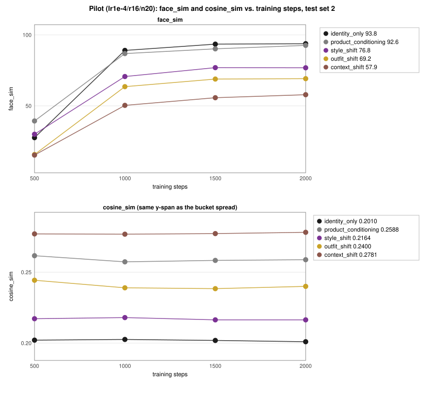
4.4 Analysis
4.4.1 Identity binding largely completes by step 1000
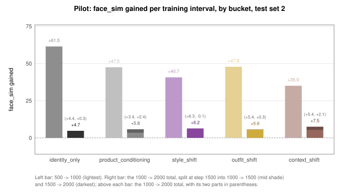
Identity binding lands between step 500 and step 1000. In the three buckets the adapter governs most directly (identity_only, product_conditioning, style_shift) the gain in that interval is 41–61 points. Only 4.7–6.2 more points arrive by step 2000 (Figure 1). Step 500 is not a viable checkpoint. It detects a face (face_detected_rate = 1.0 throughout), but not the subject’s.
4.4.2 Prompt adherence moves little at this configuration
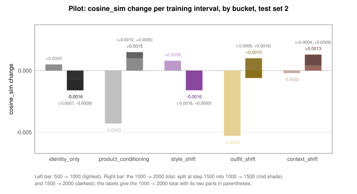
After binding (1000–2000) cosine_sim changes by at most 0.0016 per bucket, with mixed signs. The largest face_sim gain, context_shift’s +7.5, comes with cosine_sim rising at +0.00017 cosine/face, not a trade-off at all. The flatness belongs to the configuration, not to the metric. Little additional identity is learned after step 1000, so prompt adherence barely changes.
4.4.3 context_shift remains the weakest bucket at every checkpoint
context_shift is the lowest bucket at every checkpoint (Figure 1). An example prompt is “ohwx, a woman, smiling at the camera while hiking in the Swiss Alps”. The scene prior is what the bucket was designed to probe (Eval prompt set). context_shift also shows the largest 1000→2000 gain, +7.5. For prior-loaded prompts the adapter keeps recovering identity late in training.
4.4.4 Step 1500 is redundant
Step 1500 adds little. It sits between 1000 and 2000 on nearly every metric and much closer to 2000. On test set 2 the 1500→2000 face_sim gain is −0.1 to +2.4, against +3.4 to +6.3 for 1000→1500. Evaluating it would add a third checkpoint’s worth of eval cost for little beyond what 1000 and 2000 already give.
4.5 Decision
Evaluate two checkpoints per sweep configuration: step 1000 and step 2000. Step 1000 is near convergence, and an overtraining configuration shows there. Step 2000 is fully trained.
5 Partial Sweep
5.1 Config
The table records the settings the Partial Sweep chose beyond the Common config, with the reason for each as decided at the time.
| Setting | ai-toolkit default | Partial Sweep | Why |
|---|---|---|---|
lr |
1e-6 | {5e-5, 1e-4, 2e-4} | Sweep axis; the default is a do-nothing floor |
linear (rank) |
4 | {8, 16, 32, 64} planned; {8, 16, 64} run | Sweep axis |
steps |
1000 | 2000 (1500 for lr1e-4/r16/n10) | Fixed number of training steps for every configuration |
lr_scheduler |
constant |
cosine_sim, no warmup |
Smooth decay; the cosine horizon is tied to steps, so each run’s LR-at-step function depends on its own number of training steps |
| Dataset size | - | n=20 across the grid; n=10 at the centre configuration | One ablation at the Pilot’s configuration |
timestep_type |
sigmoid |
sigmoid (inherited) | Not an explicit decision |
| LoRA dropout | off | off | Regularization deferred |
| Inference LoRA scale | - | 1.0 | The trained scale; not a Partial Sweep variable |
max_step_saves_to_keep |
5 | 4 | 2000/500 = 4 |
| training seed | unseeded | unseeded | Not an explicit decision (see below) |
Two further defaults were accepted without an explicit decision: max_grad_norm: 1.0, and min_snr_gamma/noise_offset off. They are part of the configuration’s identity even though untouched. The rest are in Common config. Training was unseeded. The Partial Sweep is therefore not bit-reproducible.
5.2 Execution
The planned sweep was 14 configurations. Twelve were backbone configurations, 3 learning rates × 4 ranks at n=20. Two were dataset-size ablations at the Pilot Experiment’s configuration. The first 6 ran and then the sweep stopped.
Each configuration was evaluated at 4 checkpoints, steps 500, 1000, 1500 and 2000. lr1e-4/r16/n10 has 3, because it stops at 1500.
Run order put the failure-prone configurations first. High learning rate × high rank came first, to surface not-a-number (NaN), out-of-memory (OOM) and divergence failures early. The remaining grid corners followed, then the dataset-size ablations, then the middle of the grid.
5.3 Results
5.3.1 face_sim per bucket vs. training steps
— marks a checkpoint that does not exist for that configuration (lr1e-4/r16/n10 stops at 1500).
identity_only
| Configuration | Set | 500 | 1000 | 1500 | 2000 |
|---|---|---|---|---|---|
| lr2e-4/r64/n20 | set 2 | 92.6 | 98.5 | 98.7 | 98.9 |
| set 1 | 98.5 | 99.8 | 99.9 | 99.7 | |
| lr5e-5/r64/n20 | set 2 | 21.4 | 62.7 | 70.6 | 77.6 |
| set 1 | 37.3 | 80.6 | 91.0 | 92.4 | |
| lr2e-4/r8/n20 | set 2 | 54.2 | 93.9 | 96.4 | 96.4 |
| set 1 | 80.3 | 99.4 | 99.6 | 99.6 | |
| lr5e-5/r8/n20 | set 2 | 8.0 | 13.4 | 15.9 | 15.9 |
| set 1 | 16.3 | 23.5 | 26.7 | 29.1 | |
| lr1e-4/r16/n10 | set 2 | 25.0 | 74.7 | 81.4 | — |
| set 1 | 40.8 | 91.1 | 94.7 | — | |
| lr1e-4/r16/n20 | set 2 | 28.6 | 83.4 | 91.3 | 92.0 |
| set 1 | 44.6 | 95.3 | 98.7 | 99.1 |
context_shift
| Configuration | Set | 500 | 1000 | 1500 | 2000 |
|---|---|---|---|---|---|
| lr2e-4/r64/n20 | set 2 | 57.0 | 75.1 | 74.2 | 75.1 |
| set 1 | 70.8 | 79.4 | 82.2 | 78.4 | |
| lr5e-5/r64/n20 | set 2 | 8.7 | 30.3 | 37.7 | 32.4 |
| set 1 | 9.1 | 36.2 | 53.0 | 42.6 | |
| lr2e-4/r8/n20 | set 2 | 19.5 | 56.8 | 72.8 | 73.2 |
| set 1 | 27.0 | 69.6 | 89.3 | 87.7 | |
| lr5e-5/r8/n20 | set 2 | 3.4 | 7.1 | 7.5 | 7.6 |
| set 1 | 4.4 | 7.8 | 10.1 | 9.9 | |
| lr1e-4/r16/n10 | set 2 | 14.6 | 41.6 | 43.8 | — |
| set 1 | 18.7 | 56.4 | 55.6 | — | |
| lr1e-4/r16/n20 | set 2 | 9.9 | 40.6 | 53.9 | 54.2 |
| set 1 | 12.5 | 55.3 | 65.9 | 66.6 |
style_shift
| Configuration | Set | 500 | 1000 | 1500 | 2000 |
|---|---|---|---|---|---|
| lr2e-4/r64/n20 | set 2 | 76.9 | 93.2 | 91.9 | 90.7 |
| set 1 | 78.9 | 93.7 | 93.8 | 93.7 | |
| lr5e-5/r64/n20 | set 2 | 26.0 | 52.8 | 62.0 | 65.1 |
| set 1 | 23.5 | 60.4 | 71.2 | 72.4 | |
| lr2e-4/r8/n20 | set 2 | 48.0 | 78.0 | 81.3 | 81.8 |
| set 1 | 54.4 | 80.9 | 83.1 | 83.3 | |
| lr5e-5/r8/n20 | set 2 | 13.3 | 17.0 | 20.3 | 18.5 |
| set 1 | 10.9 | 14.5 | 16.9 | 17.5 | |
| lr1e-4/r16/n10 | set 2 | 34.3 | 69.8 | 69.6 | — |
| set 1 | 32.5 | 74.3 | 75.0 | — | |
| lr1e-4/r16/n20 | set 2 | 29.0 | 72.9 | 83.7 | 83.4 |
| set 1 | 25.9 | 73.9 | 85.3 | 85.3 |
outfit_shift
| Configuration | Set | 500 | 1000 | 1500 | 2000 |
|---|---|---|---|---|---|
| lr2e-4/r64/n20 | set 2 | 68.7 | 80.0 | 77.1 | 81.5 |
| set 1 | 75.6 | 83.2 | 80.5 | 85.1 | |
| lr5e-5/r64/n20 | set 2 | 15.0 | 39.0 | 45.5 | 46.0 |
| set 1 | 23.2 | 50.9 | 59.9 | 61.3 | |
| lr2e-4/r8/n20 | set 2 | 39.4 | 69.1 | 74.3 | 74.9 |
| set 1 | 51.6 | 79.7 | 79.4 | 79.5 | |
| lr5e-5/r8/n20 | set 2 | 7.1 | 9.5 | 10.5 | 12.0 |
| set 1 | 7.3 | 12.9 | 15.1 | 16.8 | |
| lr1e-4/r16/n10 | set 2 | 22.0 | 54.9 | 58.0 | — |
| set 1 | 28.7 | 65.0 | 68.1 | — | |
| lr1e-4/r16/n20 | set 2 | 17.2 | 64.7 | 70.4 | 71.4 |
| set 1 | 27.7 | 70.7 | 76.2 | 76.7 |
product_conditioning
| Configuration | Set | 500 | 1000 | 1500 | 2000 |
|---|---|---|---|---|---|
| lr2e-4/r64/n20 | set 2 | 91.4 | 97.4 | 98.2 | 98.6 |
| set 1 | 98.2 | 99.2 | 99.8 | 99.8 | |
| lr5e-5/r64/n20 | set 2 | 22.5 | 66.1 | 71.8 | 74.3 |
| set 1 | 29.9 | 85.3 | 89.6 | 90.6 | |
| lr2e-4/r8/n20 | set 2 | 55.0 | 90.7 | 94.8 | 95.4 |
| set 1 | 71.1 | 98.2 | 99.4 | 99.5 | |
| lr5e-5/r8/n20 | set 2 | 10.0 | 18.4 | 25.5 | 25.8 |
| set 1 | 12.2 | 25.3 | 26.2 | 28.0 | |
| lr1e-4/r16/n10 | set 2 | 28.6 | 72.2 | 81.0 | — |
| set 1 | 43.0 | 90.3 | 94.1 | — | |
| lr1e-4/r16/n20 | set 2 | 33.5 | 91.1 | 91.4 | 93.2 |
| set 1 | 42.4 | 95.2 | 98.3 | 98.7 |
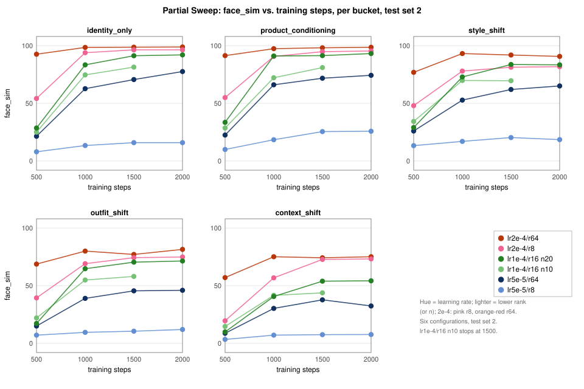
- Higher learning rate scores higher face_sim: Every 2e-4 configuration is above every 1e-4 configuration, and every 1e-4 above every 5e-5, in every bucket at every checkpoint, except that lr1e-4/r16 n20 edges lr2e-4/r8 on style_shift at 1500 and 2000 (by 2.4 and 1.6) and on product_conditioning at 1000 (by 0.4).
- Higher rank scores higher face_sim: Within each learning rate, r64 is above r8 in every bucket at every checkpoint, without exception.
- More images score higher face_sim: n=20 is above n=10 in every bucket from step 1000 on, except context_shift at 1000 (41.6 against 40.6); at step 500 the order is mixed.
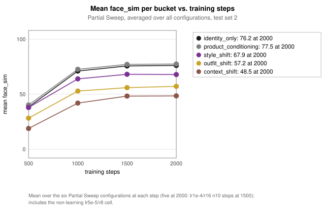
- Bucket order is stable: identity_only and product_conditioning are highest, style_shift and outfit_shift follow, and context_shift is lowest at every checkpoint, trailing the next-lowest bucket by 8-11 points throughout (five-configuration means 76.2, 77.5, 67.9, 57.2 and 48.5 at step 2000). A high mean says the bucket’s prompts leave little to compete with the learned identity; a low one says the prompt’s own content, the scene prior or the wardrobe, competes with it. The order is a difficulty ranking: identity_only is the easiest ask and context_shift the hardest.
- Movement is one-way: Within a bucket every configuration moves upward, with small dips on the plateau.
5.3.2 face_sim per config vs. training steps
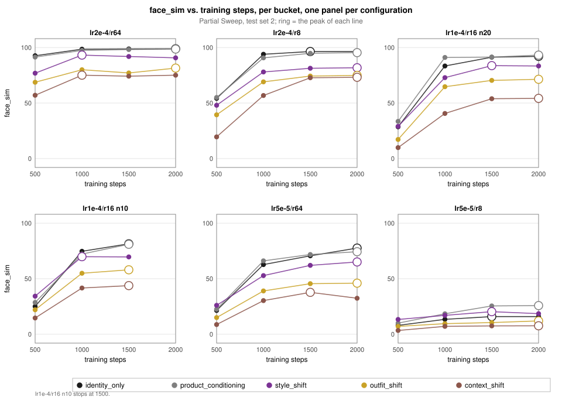
- Every configuration agrees on the order: From step 1000 on, every configuration except lr5e-5/r8 ranks its buckets the same way: identity_only and product_conditioning on top, then style_shift, outfit_shift, context_shift. The per-configuration view confirms the reading: identity_only is the easiest bucket and context_shift the hardest, whatever the configuration.
5.3.3 cosine_sim per bucket vs. training steps
The same grid on the prompt-adherence axis.
— marks a checkpoint that does not exist for that configuration (lr1e-4/r16/n10 stops at 1500).
identity_only
| Configuration | Step 500 | Step 1000 | Step 1500 | Step 2000 |
|---|---|---|---|---|
| lr2e-4/r64/n20 | 0.2041 | 0.2121 | 0.2055 | 0.2082 |
| lr5e-5/r64/n20 | 0.2053 | 0.2060 | 0.2073 | 0.2064 |
| lr2e-4/r8/n20 | 0.2060 | 0.2045 | 0.2062 | 0.2064 |
| lr5e-5/r8/n20 | 0.2018 | 0.2038 | 0.2053 | 0.2053 |
| lr1e-4/r16/n10 | 0.2014 | 0.2049 | 0.2043 | — |
| lr1e-4/r16/n20 | 0.2011 | 0.2040 | 0.2034 | 0.2044 |
context_shift
| Configuration | Step 500 | Step 1000 | Step 1500 | Step 2000 |
|---|---|---|---|---|
| lr2e-4/r64/n20 | 0.2712 | 0.2687 | 0.2686 | 0.2702 |
| lr5e-5/r64/n20 | 0.2789 | 0.2715 | 0.2751 | 0.2732 |
| lr2e-4/r8/n20 | 0.2781 | 0.2752 | 0.2723 | 0.2736 |
| lr5e-5/r8/n20 | 0.2797 | 0.2816 | 0.2822 | 0.2825 |
| lr1e-4/r16/n10 | 0.2790 | 0.2782 | 0.2773 | — |
| lr1e-4/r16/n20 | 0.2779 | 0.2782 | 0.2786 | 0.2795 |
style_shift
| Configuration | Step 500 | Step 1000 | Step 1500 | Step 2000 |
|---|---|---|---|---|
| lr2e-4/r64/n20 | 0.2131 | 0.2220 | 0.2179 | 0.2155 |
| lr5e-5/r64/n20 | 0.2232 | 0.2186 | 0.2163 | 0.2181 |
| lr2e-4/r8/n20 | 0.2184 | 0.2159 | 0.2126 | 0.2101 |
| lr5e-5/r8/n20 | 0.2182 | 0.2215 | 0.2189 | 0.2183 |
| lr1e-4/r16/n10 | 0.2183 | 0.2206 | 0.2199 | — |
| lr1e-4/r16/n20 | 0.2149 | 0.2164 | 0.2165 | 0.2148 |
outfit_shift
| Configuration | Step 500 | Step 1000 | Step 1500 | Step 2000 |
|---|---|---|---|---|
| lr2e-4/r64/n20 | 0.2359 | 0.2391 | 0.2368 | 0.2366 |
| lr5e-5/r64/n20 | 0.2437 | 0.2473 | 0.2443 | 0.2434 |
| lr2e-4/r8/n20 | 0.2419 | 0.2431 | 0.2392 | 0.2392 |
| lr5e-5/r8/n20 | 0.2498 | 0.2455 | 0.2473 | 0.2457 |
| lr1e-4/r16/n10 | 0.2455 | 0.2413 | 0.2404 | — |
| lr1e-4/r16/n20 | 0.2449 | 0.2412 | 0.2420 | 0.2408 |
product_conditioning
| Configuration | Step 500 | Step 1000 | Step 1500 | Step 2000 |
|---|---|---|---|---|
| lr2e-4/r64/n20 | 0.2573 | 0.2509 | 0.2568 | 0.2523 |
| lr5e-5/r64/n20 | 0.2590 | 0.2555 | 0.2552 | 0.2529 |
| lr2e-4/r8/n20 | 0.2632 | 0.2570 | 0.2563 | 0.2547 |
| lr5e-5/r8/n20 | 0.2567 | 0.2600 | 0.2646 | 0.2612 |
| lr1e-4/r16/n10 | 0.2594 | 0.2607 | 0.2604 | — |
| lr1e-4/r16/n20 | 0.2592 | 0.2566 | 0.2565 | 0.2559 |
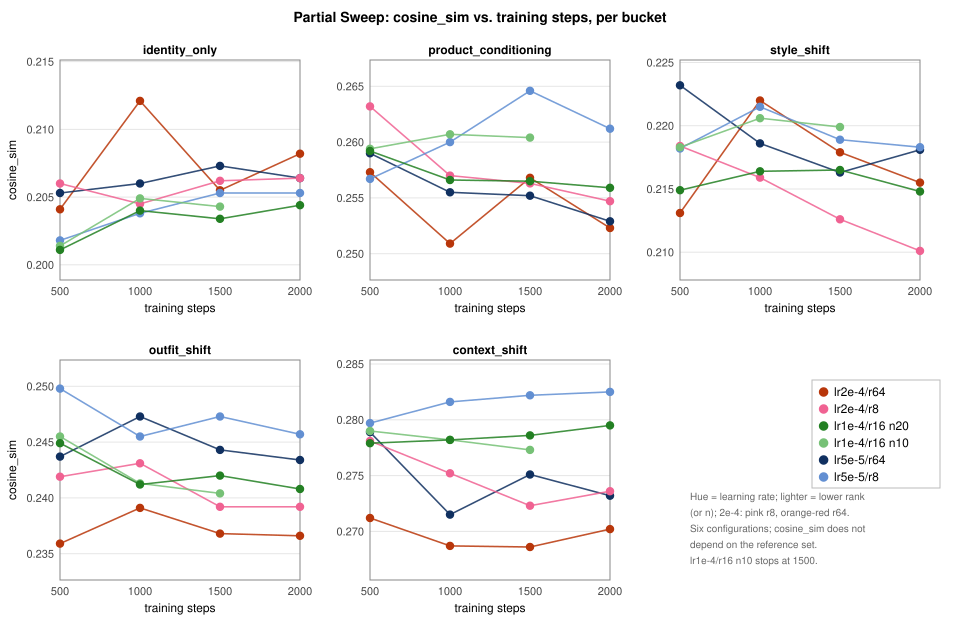
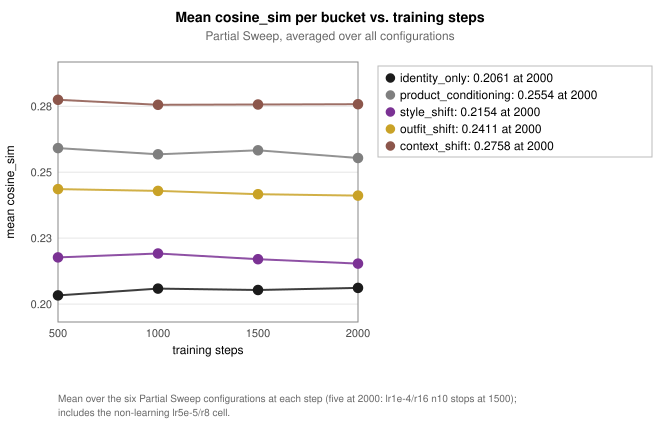
- No learning-rate or rank ordering: Unlike face_sim, cosine_sim shows no clear learning-rate or rank pattern. At most, a few configurations hold a fixed direction within a bucket: lr2e-4/r8 declines on product_conditioning, style_shift and context_shift, while lr5e-5/r8 drifts upward on context_shift to the grid’s highest value.
- Bucket means roughly invert the face_sim order: Collapsed to the mean cosine_sim per bucket (Figure 8), a pattern does appear. identity_only, the top face_sim bucket, is the lowest cosine_sim bucket (≈0.206), and context_shift, the lowest on face_sim, is the highest (≈0.276). style_shift and outfit_shift also switch places. That points to a trade-off between face_sim and cosine_sim, taken up in the Analysis.
5.4 Analysis
5.4.1 Reading the two grids together — Prompt adherence moves inversely to identity
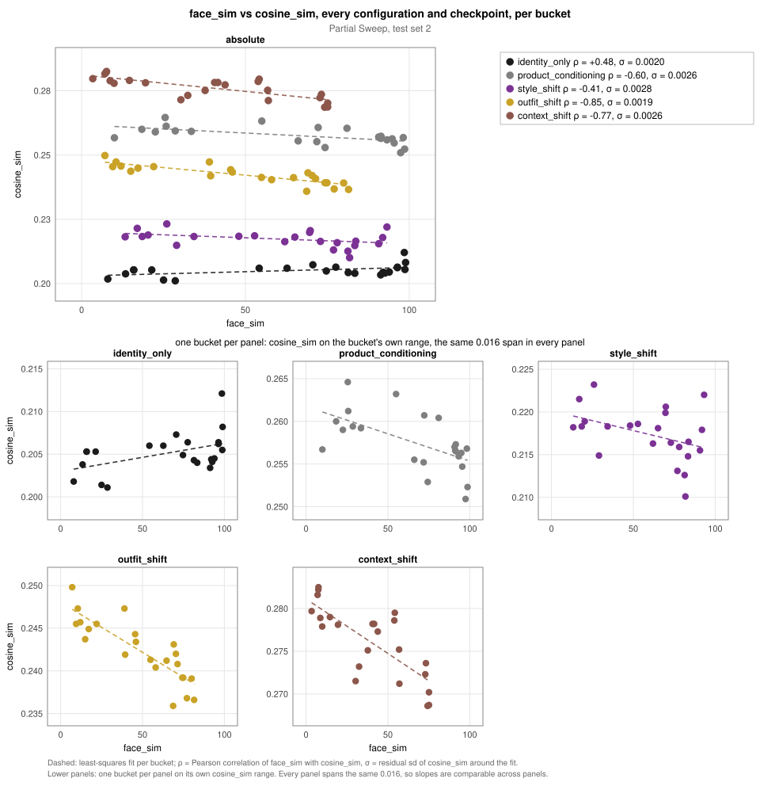
- outfit_shift (−0.85): The steepest trade-off. The adapter learned the subject with the training photos’ clothing and styling, so the more it reproduces that look, the less of the requested outfit survives.
- context_shift (−0.77): The scene prior (Eval prompt set) must be overridden to keep the face. Identity recovered there is taken from the scene.
- product_conditioning (−0.60): The prompt adds an object beside the subject rather than changing the subject, so less is displaced.
- style_shift (−0.41): The prompt changes the rendering rather than the content. A stronger face has the least to displace.
- identity_only (+0.48): The exception. Its prompts ask for the subject and nothing else, so there is almost nothing to adhere to beyond the face. Identity improves without giving up any prompt adherence, and cosine_sim stays near 0.206 whatever the configuration. That is why the transfer basis excludes it.
The mechanism is competition. An adapter that has learned nothing leaves the base model’s prompt adherence intact. One that has learned a face asserts it, and the assertion competes with the rest of the prompt.
5.4.1.1 The two hardest buckets
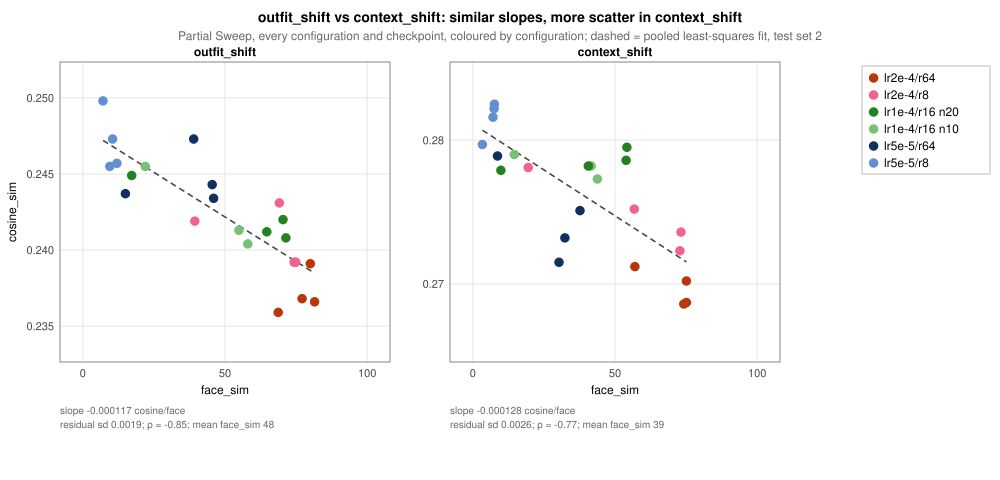
- Two different questions: context_shift has the lowest face_sim of any bucket and outfit_shift the second lowest, yet outfit_shift shows the tighter face_sim-cosine_sim coupling. Those are two different questions with two different answers. One is where the cloud sits. The other is how tightly it follows a line.
- Why their face_sim is lowest: Each bucket competes with the identity in its own way (bullets above), and these two compete hardest. In context_shift the scene prior, plus a scene composition that leaves the face a small part of the frame, puts it lowest. In outfit_shift the wardrobe entanglement puts it second.
- Why outfit_shift couples more tightly: ρ is scale-free. It ignores where the cloud sits and measures only how closely cosine_sim tracks face_sim, so a uniformly low bucket gains nothing in ρ. The pooled least-squares slope (\beta = \rho\,\sigma_{\text{cosine\_sim}}/\sigma_{\text{face\_sim}}) is about the same in both: outfit_shift −0.000117 and context_shift −0.000128 cosine/face, context_shift about 9% steeper. What separates them is the scatter around the line. The residual sd (\sigma_{\text{cosine\_sim}}\sqrt{1-\rho^{2}}) is 0.0019 against 0.0026, so the fit explains 73% of outfit_shift’s cosine_sim variance against 60% of context_shift’s. In outfit_shift every point of face_sim is paid for in prompt adherence, because the garment is what the prompt is scored on. In context_shift the face is a small part of a scene the base model renders well on its own, so how much an adapter disturbs the scene is only loosely tied to how much face_sim it wins.
5.4.2 PS-Finding-1 — Rank: rank 64 is not conclusively better, and is dropped
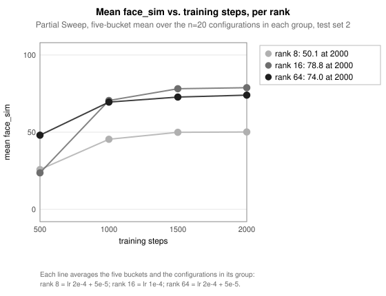
- Finding: Where the learning rate converges, rank 64 buys little. At 2e-4 it ends within 4.6 five-bucket points of rank 8 (89.0 against 84.3) at eight times the parameters.
- Why a low rank is enough: Face identity is a low-dimensional target. A face personalizes with a rank-1 adapter of about 30K parameters without losing face-recognition fidelity [21]. Beyond the rank that encodes it, extra rank costs prompt adherence rather than buying identity [22].
- Caveat: Read this as a heuristic, not a measured main effect. It rests on four corner configurations at two ranks and a fixed number of training steps.
Implication: Drop rank=64 and explore {8, 16, 32}. At four times rank 16’s parameters it is not conclusively better, so there is no strong reason to carry it once 32 enters the grid.
5.4.3 PS-Finding-2 — Training steps: convergence timing depends on the configuration
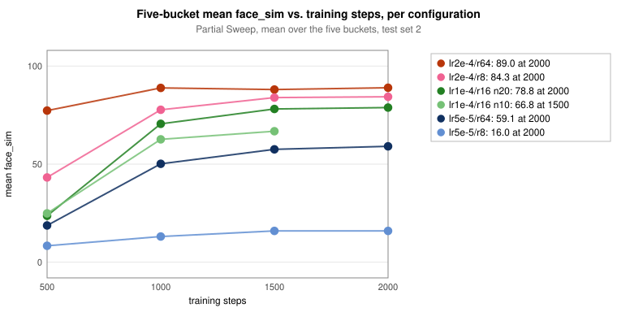
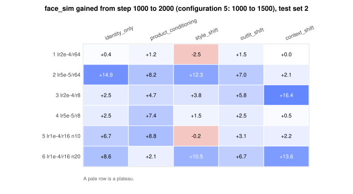
- Finding: The learning rate sets when a configuration stops improving. The 2e-4 cells are flat from step 1000 (lr2e-4/r64) and 1500 (lr2e-4/r8). lr1e-4/r16 is flat from 1500. lr5e-5/r64 is still rising at 2000, and lr5e-5/r8 stays below face_sim 20.
- Why the sweep stopped at 6 of 14 configurations: The Pilot’s two-checkpoint Decision rested on a plateau seen at one configuration. Configurations 1-6 showed that only configuration 1 was flat after step 1000. Every other configuration was still gaining between 1000 and 2000 (Figure 13). At a shared number of training steps the sweep could not tell a weak configuration from a slow one, and the remaining eight configurations would have carried the same confound.
Implication: Train each configuration to its own convergence point, not to fixed training steps. Characterize convergence in the design and compare at converged performance in the analysis. Regularize a configuration that has peaked and begun to decline rather than train it further. More generally, pruning an axis needs a stated interaction assumption and a cheap check that would falsify it.
5.4.4 PS-Finding-3 — Buckets: they converge at different rates within the same configuration
- Finding: Within a single configuration, the optimal checkpoint for one bucket is not necessarily the optimal checkpoint for another. The rings in Figure 6 mark each trajectory’s peak; within a panel they do not fall on one step.
Implication: Report the peak per (configuration, bucket) rather than aggregating away the trade-off, and state which bucket a recommended checkpoint optimizes for.
5.4.5 PS-Finding-4 — Dataset size: more images give better results at lr1e-4/r16
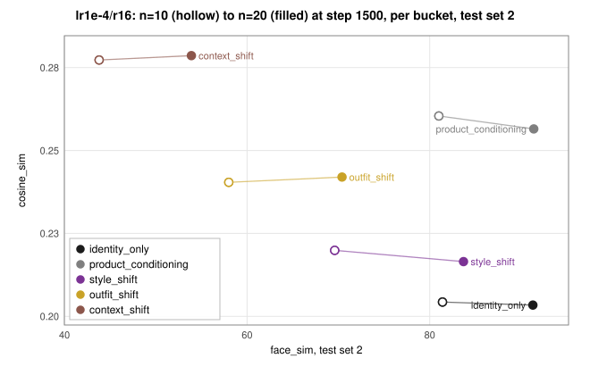
- Finding: At step 1500, n=20 beats n=10 on every bucket by +9.9 to +14.1, with no consistent prompt-adherence cost.
- Why more images help: The gain is largest on style_shift and outfit_shift. More pose, expression and lighting variation helps the LoRA generalize, the mechanism practitioner guidance gives for favouring varied over redundant images [23].
Implication: Add dataset size 30 to see whether even more images help.
6 Full Sweep
6.1 Config
This document specifies the Full Sweep in two parts:
- Axes Design: One section per axis. Each states which values or methods are used and why, and whether the axis could be studied separately from the main screen and on what basis. Separability is argued per axis rather than assumed.
- Threats to Validity: What could make these conclusions non-transferable.
A full factorial over LR × rank × training steps × dataset size × timestep sampling × dropout × inference scale would exceed 100 training runs. The Full Sweep runs 18.
6.2 Axes Design
6.2.1 Separability: the general argument
The Partial Sweep’s failure was not that it pruned the design. It pruned training steps without stating the assumption that made pruning valid, and without any check that would have caught the assumption breaking [PS-Finding-2].
The screening literature licenses this kind of pruning through three principles [24]. Effect sparsity says few effects in a factorial matter. For hyperparameters specifically, only a few matter and which ones differs by dataset [25]. Hierarchical ordering says low-order effects matter more than high-order ones. Effect heredity says an interaction is unlikely to matter unless a parent main effect does. Box and Wilson’s sequential method is the same logic in practice: screen, move to the region of interest, characterize, confirm [26]. Bengio’s manual-search recommendation is coordinate descent, one hyperparameter at a time from the best configuration so far [27]. All are conditional. Pruning is sound when the assumption holds. Each axis section therefore states, under Separability bucket, which assumption it makes and what would falsify it.
Buckets:
- (i) Structurally separable: Excluded by construction, not by an independence claim.
- (ii) Interacts, winner cell suffices: An interaction may exist, but the practically relevant question is answered at the winner cell.
- (iii) Interacts, main effect unmeasured: Sequenced rather than assumed independent.
- (iv) Not separable: Must be absorbed into the design, not pruned.
6.2.2 Axis1-LR: Learning rate = {5e-5, 1e-4, 2e-4}
The learning rate sets the size of each optimizer update, and with it how fast the adapter learns.
Values: Three levels, geometric spacing, unchanged from the Partial Sweep.
Why these values: They span published FLUX practice. The low end, 1e-4, is EliGen’s setting [28] and a rank-8 SimpleTuner run [29]. The high end, 2e-4, is SimpleTuner’s rank-32 run [29]. The 4e-4 one guide recommends [23] sits above the range and was not tested. The Partial Sweep ran the same levels, and its LR ranking was confounded by the fixed number of training steps [PS-Finding-2]. That is a reason to re-run them under a corrected design, not to change them.
6.2.3 Axis2-Rank: Rank = {4, 8, 16, 32}
Rank sets the width of the low-rank update, the number of directions the adapter can write into the frozen weights, and with it the adapter’s capacity.
Values: Four levels, geometric spacing. Rank 64 is dropped [PS-Finding-1]. Community guidance starts at 32 and warns that higher rank may overfit low-diversity datasets [23]. Rank 4 is added.
Why these values: LoRA rests on the intrinsic-dimensionality hypothesis [30]. Fine-tuning lives in a subspace far smaller than the parameter count, so a rank-r constraint loses little [31], and a single identity is a narrow target. Geometric spacing covers an 8x range in four runs. For positive-valued hyperparameters the ratio between levels, not their difference, predicts the size of the effect, so levels are placed evenly in the logarithm [27]. Linear spacing would waste levels where the response is flat.
Why add rank 4: [PS-Finding-1] shows 8 is sufficient, not minimal, so the capability floor is unprobed. ai-toolkit’s default rank is 4, below the previous floor. The r4 cells test where that floor is, whether rank 4 keeps pace with 8-32 or falls off.
Caveat: Alpha = rank throughout (Common config). “Rank does not help” is therefore a claim about that scaling convention, not about rank in general.
6.2.4 Why LR and rank are swept together
The screen must be the pair of axes with the largest, most entangled main effects, since everything downstream is conditioned on it. LR and rank interact by construction. LR sets how fast the update moves and rank sets how many directions it may occupy. The effective step size per direction depends on both through alpha/r scaling [20], so they cannot be studied one at a time. The Partial Sweep showed the interaction empirically (Partial Sweep — Results, face_sim per bucket vs. training steps, first two orderings): the learning rate separates first, every higher-LR configuration above every lower-LR one in every bucket, and rank separates second, within a learning rate. The size of the rank effect still depended on the learning rate (43.1 five-bucket points between the ranks at 5e-5 against 4.6 at 2e-4), so rank read at one learning rate would not have transferred to another. LR × rank therefore runs as a full 3x4 factorial, the only unpruned part of the Full Sweep.
The winner cell: The winner cell is the (LR, rank) cell that outperforms every other cell by two criteria, in order:
- Performance: Irrespective of the number of training steps used, it outperforms the others under the selection rule (Scoring) by a clear margin.
- Tie-break: In case of a tie, the cell with the best transfer face_sim.
“At the winner cell” in the sections below means this winner cell. The dataset-size, timestep-sampling and dropout blocks each run at this (LR, rank) winner cell while varying their own axis.
6.2.5 Axis3-Steps: Training steps = per-cell training to convergence
Training steps set how many optimizer updates a cell receives, and so where on its learning curve it stops.
Method: Each cell trains to a per-LR cap and saves checkpoints throughout. Its best checkpoint is chosen afterwards from the evaluated trajectory rather than by a stopping rule during training. This needs no in-loop monitoring, yields the full learning curve, and lets the selection rule change without retraining. Its cost is that some cells train past their peak. That is also the only way to observe the overtraining the Partial Sweep showed on test set 1 (Partial Sweep - Results). It is the opposite choice to adaptive early stopping [32], which saves compute by not training past the point where a run underperforms.
Budgets: Initial caps are 3000 steps at lr=2e-4, 4000 at 1e-4 and 5000 at 5e-5. The spacing prices only the prior that slower LRs converge later. The 5000 cap for 5e-5 is a declared bet, because the Partial Sweep gives no upper bound for it (still moving at its final checkpoint). The 2e-4 cap doubles as the floor. No characterized cell trains fewer than 3000 steps (≥6 checkpoints).
The caps are allocations, not convergence claims. A cell unconverged at its cap has its best checkpoint on the border of the interval searched. That is the case where the search should be pushed past the border [27], so the cell is extended in 1000-step increments to a ceiling of cap+2000. A cell still climbing at its ceiling is reported unconverged rather than compared, and is itself a finding.
Extensions are a human decision, made at cap on a per-configuration summary (per-bucket trajectory, last-two-window deltas, incremental cost).
LR schedule: Constant with a 50-step warmup (Full Sweep — Config). A schedule whose shape depends on the number of training steps, as cosine_sim does, complicates extending the cap of an unconverged configuration. A constant LR does not, and it is ai-toolkit’s default [18].
Convergence: A configuration is taken as converged when every bucket’s face_sim on test set 2 changes by no more than 2-3 points over the last 500-step window. A bucket still gaining more than that means the configuration is still improving, and extension is decided at cap from those last-window deltas. The literature offers no standard finite-step convergence point, so this is a working reading, not a formal test.
Separability bucket: (iv) — absorbed
- Assumption: The Partial Sweep assumed that the convergence point at (lr=1e-4, r=16) generalizes across the grid.
- Status: Falsified [PS-Finding-2]. The interaction is strong and first-order.
- Handling: Absorbed. It is optimized out within each cell by training to its own convergence [PS-Finding-2], with training steps to convergence reported as an outcome. That is the standard treatment for a strongly interacting nuisance parameter.
- Falsification check: A cell still climbing at its ceiling (Budgets, above).
6.2.6 Axis4-DS: Dataset size = {10, 20, 30} at equal training steps
Dataset size n is the number of training images the adapter sees; it sets how much appearance variation the adapter can learn from.
Values: Three levels. n=20 is the screen default. n=10 and n=30 run at the winner cell only (The winner cell, above).
Why these values: They bracket the two published regimes. DreamBooth’s original protocol used 3-5 subject images [4]. FLUX community guidance recommends 25-30 for a focused subject [23]. The Partial Sweep measured +10 to +14 face_sim from n=10 to n=20 [PS-Finding-4], so more images helped. n=30 tests whether the gain continues.
Separability bucket: (ii) — winner cell sufficient
- Interaction: The optimal n plausibly depends on rank. Rank caps how many distinct appearances the adapter can fit, and more varied images demand more of that capacity. Community guidance states the interaction outright: higher rank overfits low-diversity datasets [23].
- Handling: The axis is nonetheless run at one cell, for cost.
- Scope limit: n is characterized at the winner cell only. A rank-dependent optimal n is untested.
6.2.7 Axis5-TSSampling: Timestep sampling = {sigmoid, shift, linear}
timestep_type sets which noise levels the objective weights, so it changes the adapter learned.
Values: sigmoid (baseline), shift and linear. The baseline is already in the screen, so the block adds two new cells at the winner cell, shift and linear.
Why timestep sampling and not min-SNR gamma: ai-toolkit also exposes min-SNR-γ (minimum signal-to-noise ratio weighting), which reweights the loss per timestep [33]. Under the rectified-flow objective it is the same control as the sampling density π(t) in a different parametrization, equivalent to the loss weighting w_t = \frac{t}{1-t}\,\pi(t) [34], and the sampling-density form is the one the SD3 line argues in, so that form is swept and min-SNR-γ stays off.
Why linear: SD3 introduced logit-normal timestep sampling, which puts more weight on intermediate timesteps where the velocity target is hardest, and found it beat uniform sampling on final quality [34]. Two later results qualify it. The best logit-normal parameters are data-dependent, with an ImageNet winner degrading as signal strength falls [35]. Middle-biased sampling speeds early convergence but ends worse than uniform, because under-sampling the endpoints leaves fine detail unresolved [36]. ai-toolkit’s sigmoid sampler is that logit-normal(0, 1) distribution and linear is uniform, so the arm reproduces the comparison at small N. None of the published work covers single-identity LoRA on FLUX.
Separability bucket: (iii) — sequenced with a falsification check
- Assumption: None. An interaction is expected, since sampling sets which noise levels the adapter must model, which both capacity and gradient variance touch.
- Basis: Sequencing, not independence. The main effect is contested in the literature [35], [36] and absent for FLUX, so hierarchical ordering says measure it first [24].
- Falsification check: One extra cell, about 3 GPU-hours. The best arm is re-run at a non-winning rank. If the effect reverses or vanishes there, heredity is falsified for this axis and that is reported instead.
6.2.8 Axis6-Dropout: LoRA dropout = {0, 0.1}
LoRA dropout is standard dropout [37] applied inside the adapter. During training a random fraction of the lora_down output is zeroed before lora_up [18], so the update cannot depend on any fixed subset of its rank directions. That is a constraint on the adapter’s capacity in the usual regularization sense.
Values: One arm at 0.1 against the winner cell as its control. The baseline is not regularization-free (caption dropout — Common config).
Why this axis: Cheap insurance against overfitting, which subject-driven fine-tuning is known to suffer [4], [38]. The Partial Sweep showed only faint signs of it: outfit_shift flat after step 1000 at lr2e-4/r8, and context peak-and-decline at rank 64, both on test set 1. The arm therefore guards against a possibility, not an observed signature.
Separability bucket: (ii) — winner cell sufficient
- Interaction: Dropout’s effect may depend on rank or learning rate.
- Handling: It is run at the winner cell only, for cost.
- Falsification check: None, an accepted gap.
6.2.9 Axis7-LS: Inference LoRA scale = {0.7, 0.85, 1.0, 1.15}
The inference LoRA scale is the multiplier on the adapter’s contribution when it is loaded onto the base model. It applies at generation time, to already-trained checkpoints.
Values: Four levels around the Partial Sweep default and reference point, 1.0.
Why this axis: [PS-Finding-3] showed buckets converge at different rates within one configuration, so “which checkpoint do I ship” has no single answer. Inference scale is a second inference-time parameter on the same trade-off, and the Full Sweep asks whether it substitutes for choosing an earlier checkpoint. The two directions carry different hypotheses:
- Below 1.0 (0.7, 0.85): The identity signal, the face direction itself, should survive attenuation, while an overfit component, what the adapter memorized beyond the face (the training-set styling that suppresses prompt adherence), may not. For a converged adapter, scaling down is, under local convexity, the minimizer of the training objective plus a Hessian-weighted L2 penalty toward the base weights, “Tikhonov regularization” in the terms of [39].
- Above 1.0 (1.15): A trained checkpoint may under-assert the identity at scale 1.0. Amplifying the adapter’s contribution past its trained strength would then recover face_sim from the same checkpoint without retraining.
Separability bucket: (i) — separable by timing
- Not an independence claim: Scale traverses the ray \theta_{\text{base}} + \alpha'\,\theta_{\text{LoRA}}, whose direction is fixed by every other axis, so the interaction is total.
- Why outside the factorial: It is applied after training at zero training cost [39]. Any configuration’s scale curve costs one eval run.
- Scope limit: 3 of 12 screen cells, spanning the observed behaviour.
6.2.10 Axis8-Alpha: Alpha = {4, 8, 16, 32}, tied to rank
Alpha sets how strongly the adapter’s update is scaled relative to its rank.
Not swept, because it is not independent: Every rank cell is also an alpha cell. The adapter is scaled by \gamma_r = \alpha/r, so alpha = rank fixes \gamma_r = 1 at every rank. That is one slice through (rank, alpha) space, not a neutral default.
Why it matters: A scaling convention set at one rank changes the effective learning rate at another, so the optimal LR must be re-tuned when rank changes. [40] finds two regimes for LoRA, decided by initialization and the scaling factor. In one the optimal LR is roughly rank-invariant. In the other it scales inversely with rank. Alpha = rank therefore fixes one LR-vs-rank relationship, and [PS-Finding-1]’s flat rank response holds under it. [20] shows fixed-alpha scaling stunts higher ranks, and [41] found performance increases with rank once scaling is corrected. Under another convention the same comparison could come out differently.
No justification is available for pruning this: Our convention avoids the collapse [20] describes for fixed alpha. Rank-stabilized scaling (rsLoRA, \gamma = \alpha/\sqrt{r} instead of \alpha/r [20]) is untested and the Full Sweep does not add it. Every rank claim is conditional on this convention.
6.2.11 Summary ledger
One row per axis. It records whether the axis interacts with the LR × rank screen, how the design handled it, and what would have shown the handling to be wrong.
| Axis | Interacts with LR x rank? | Bucket | Basis | Falsification check |
|---|---|---|---|---|
| Training steps | Yes, proven [PS-Finding-2] | (iv) absorbed | the Partial Sweep data | Cell still climbing at cap |
| Dataset size | Plausibly yes (mechanism, [23]) | (ii) winner cell | Cost; interaction not tested | None (accepted gap) |
| Timestep sampling | Plausibly yes | (iii) sequenced | Main effect contested [35], [36] | Best sampler arm re-run at a second rank |
| LoRA dropout | Plausibly yes | (ii) winner cell | Cost; interaction not tested | None (accepted gap) |
| Inference scale | Yes, totally | (i) structural | Post-training, zero cost [39] | n/a |
6.3 Threats to Validity
6.3.1 Single subject, the largest limit on external validity
Every number comes from one subject at one resolution, and all but the dataset-size axis from one 20-image dataset. Specific recommendations might not transfer, for four reasons:
- Prior strength: Black Forest Labs discloses no training data for FLUX.1 [16]. The consistent community report is that it does not reproduce recognizable public figures, copyrighted characters or named artist styles, apparently by design [42]. The prior on this subject’s face is therefore expected to be weak. The adapter teaches an identity rather than sharpening one, and results would transfer to an unknown subject better, not worse.
- Subject distinctiveness: Faces near the model’s average may need more capacity to separate. Distinctive features may bind faster.
- Dataset composition: Curated professional photography, frontal, with consistent lighting, one adult, one gender presentation and one apparent ethnicity. Casual phone photos or wider age and styling variation is a different learning problem.
- Metric characteristics: Conclusions inherit whatever properties AWS Rekognition’s face model has. Demographic differentials in face recognition are documented. They are large for false matches, factors of 10 to over 100 across groups in the National Institute of Standards and Technology’s (NIST) evaluation of 189 algorithms, and smaller but algorithm-specific for similarity between true matches [43], [44]. The similarity scores used here were not characterised for this subject’s demographic.
What transfers is the shape of the findings and the procedure: held-out multi-reference scoring, per-LR caps on training steps, and retrospective checkpoint selection. Run the procedure for your subject. Do not copy the numbers.
6.3.2 Single seed per cell
The Full Sweep exports an explicit training seed but still runs one seed per cell. Stochastic variance is therefore not separated from systematic effects, and differences of a few points between cells at the same learning rate are within what a seed could plausibly produce. Neural-network training is stochastic. Initialization, data order and hyperparameter noise all change the result, so confident comparisons need several seeds averaged, not one run each [45]. Eval generation likewise uses one seed (42) for every prompt, so inference-time variance is not separated either. Multi-seed averaging was not run, purely for cost.
6.3.3 The same score both picks the best checkpoint and reports it
Each checkpoint’s test-set-2 score is a noisy estimate of how good that checkpoint is (five prompts per bucket, one seed). A cell’s 6 to 10 checkpoint scores are compared and the highest is chosen as the cell’s best checkpoint. That same highest score is then used as the estimate of the configuration’s quality. It is compared across cells and read as what the configuration would score again. That is where the bias enters. The mean of noisy samples is an unbiased estimate of what is underneath. Their maximum is not, because it rises with the number of samples even when nothing underneath changes [46]. The chosen checkpoint is partly the one whose noise happened to fall on the high side. A fresh scoring of the chosen checkpoint on images not used for the choice would not inherit that luck. No neutral one was available: the only other scoring, test set 1, shifts the references as well as the noise realization. Reported values are therefore biased upward, and the per-LR caps should in principle flatter the 5e-5 cells (10 checkpoints) over the 2e-4 cells (6 to 8). The effect is probably small here. The best-to-second-best gap (per-checkpoint record, not tabulated) averages 0.76 at 2e-4, 1.37 at 1e-4 and 1.18 at 5e-5, unrelated to checkpoint count, so extra checkpoints mostly confirm a plateau rather than raise the maximum. The bias itself is unmeasured, because that would need a separate selection set or repeated seeds. Every reported best-checkpoint value is therefore an upper bound.
6.3.4 Coordinate-descent blindness, and no winner cell to descend from
The dataset-size, timestep-sampling and dropout blocks run at one screen cell. An axis that helps some other cell more is therefore invisible, except where Axis5-TSSampling’s falsification check probes it.
6.3.5 Alpha convention
All rank findings are conditional on alpha = rank (Axis8).
6.3.6 Test-set sensitivity (measured, not eliminated)
Identity scores depend on which test set they are read on. Scoring both reports the sensitivity but does not remove it. Test set 2 is only as strict as its events, and a third set from different conditions might change the numbers again.
6.3.7 Training-set event clustering
The 30 training images come from a handful of events. The adapter may therefore be learning “this person at a handful of public events” rather than a condition-independent identity. Test set 1 shares events with the training data and would not reveal the difference. Test set 2 shares none, and its images share no event with each other. Whatever the clustering costs is therefore already reflected in the test-set-2 scores the report leads with, and the identity findings generalize to the extent test set 2 does.
6.3.8 Training-caption vocabulary overlaps the eval prompts
The captions on the training images use “wearing” in all 30 images, “white” in 19, “background” in 11, “smiling” in 5 and “standing” in 4. These terms also appear in the eval prompts, so cosine_sim is measured partly on text the adapter was trained toward. The overlap is constant across configurations, so comparisons hold. Absolute cosine_sim is not a clean prompt-adherence measure.
6.3.9 Caption strategy untested
Every configuration uses the same captions: trigger token followed by detailed descriptions, the form practitioners recommend [23]. It is believed to matter. The trigger token learns jointly with whatever words co-occur with it in the captions, so the identity becomes entangled with those words, and the caption composition shapes what the adapter binds to the trigger [47].
6.4 Execution
In every block the winner cell’s screen run is the base case the arms are compared against; it is not retrained.
| Block | Cells | Caps |
|---|---|---|
| Screen | 12 | LR {2e-4,1e-4,5e-5} x rank {4,8,16,32}; fixed: n=20, sigmoid sampling, dropout 0, scale 1.0; caps 3000/4000/5000 |
| Dataset size | 2 + reuse | winner (LR, rank) at n=10 and n=30, equal 3000-step budget |
| Timestep sampling | 3 | winner (LR, rank) with shift and linear sampling; additionally (winner LR, r32) with linear (Axis5 falsification check) |
| LoRA dropout | 1 | winner (LR, rank) at dropout 0.1 |
| Inference scale | 0 trained | winner (LR, rank) at scales {0.7, 0.85, 1.15}; additionally (winner LR, r4) and (winner LR, r32), spanning capacity (Axis7) |
6.4.1 Extensions
Four cells were extended past their cap, all at 2e-4. No 5e-5 cell needed one, so the 5000 bet was never called.
- Two dataset-size arms were already converged: n=30, and the screen cell lr2e-4/r8/n20 also serving as the axis’s middle point. What read as a final-window gain was checkpoint-to-checkpoint variation. The extra 1000 steps (3000 → 4000) returned them to where they started.
- Two rank-8 timestep arms were genuinely still learning. Both reached the 5000 ceiling still climbing, and are reported unconverged and compared only provisionally. One overtook the baseline only after extension, having been behind it at the shared 3000-step cap. That is [PS-Finding-2] repeating on a second axis.
- The rank-32 linear arm converged inside its 3000-step budget, so “still climbing at the ceiling” applies only to the rank-8 arms.
- Lesson: The extension rule should trigger on a gain sustained over two windows, since one can reverse at the next checkpoint.
6.5 Results
| LR | rank | best step | identity_only face_sim | transfer face_sim | transfer cosine_sim |
|---|---|---|---|---|---|
| 2e-4 | 8 | 4000 | 99.04 | 87.92 | 0.2444 |
| 2e-4 | 16 | 2500 | 99.12 | 87.02 | 0.2464 |
| 2e-4 | 32 | 3000 | 98.76 | 87.23 | 0.2450 |
| 2e-4 | 4 | 1500 | 96.96 | 81.27 | 0.2439 |
| 1e-4 | 8 | 3500 | 98.19 | 85.85 | 0.2455 |
| 1e-4 | 32 | 3000 | 98.31 | 84.70 | 0.2447 |
| 1e-4 | 4 | 4000 | 98.42 | 84.09 | 0.2451 |
| 1e-4 | 16 | 2500 | 97.87 | 83.65 | 0.2463 |
| 5e-5 | 16 | 4000 | 98.42 | 84.00 | 0.2477 |
| 5e-5 | 32 | 5000 | 98.13 | 82.80 | 0.2441 |
| 5e-5 | 8 | 4000 | 97.58 | 82.25 | 0.2475 |
| 5e-5 | 4 | 5000 | 97.74 | 81.00 | 0.2491 |
| schedule | steps | identity_only face_sim | transfer face_sim | transfer cosine_sim | |
|---|---|---|---|---|---|
| Partial Sweep lr5e-5/r8 | cosine decay | 2000 | 15.92 | 15.99 | 0.2519 |
| Full Sweep lr5e-5/r8 | constant | 4000 (best) | 97.58 | 82.25 | 0.2475 |
| n | step | transfer face_sim | transfer cosine_sim |
|---|---|---|---|
| 10 | 3000 | 82.50 | 0.2459 |
| 20 | 3000 | 87.92 | 0.2412 |
| 30 | 3000 | 86.04 | 0.2483 |
| rank | timestep | best step | identity_only face_sim | transfer face_sim | transfer cosine_sim |
|---|---|---|---|---|---|
| 8 | sigmoid | 4000 | 99.04 | 87.92 | 0.2444 |
| 8 | shift | 5000* | 96.93 | 88.58 | 0.2404 |
| 8 | linear | 5000* | 98.07 | 93.15 | 0.2378 |
| 32 | sigmoid | 3000 | 98.76 | 87.23 | 0.2450 |
| 32 | linear | 3000 | 99.00 | 94.80 | 0.2486 |
| arm | best step | transfer face_sim | transfer cosine_sim |
|---|---|---|---|
| dropout 0.0 (control) | 4000 | 87.92 | 0.2444 |
| dropout 0.1 | 2500 | 84.50 | 0.2481 |
| cell | metric | 0.70 | 0.85 | 1.00 | 1.15 |
|---|---|---|---|---|---|
| r4 (step 1500) | identity_only | 91.0 | 95.3 | 97.0 | 98.2 |
| transfer face_sim | 67.3 | 75.0 | 81.3 | 88.0 | |
| cosine_sim | 0.2483 | 0.2462 | 0.2439 | 0.2411 | |
| r8 (step 4000) | identity_only | 96.1 | 98.3 | 99.0 | 99.4 |
| transfer face_sim | 75.9 | 83.6 | 87.9 | 91.3 | |
| cosine_sim | 0.2441 | 0.2430 | 0.2444 | 0.2421 | |
| r32 (step 3000) | identity_only | 95.9 | 98.3 | 98.8 | 98.9 |
| transfer face_sim | 77.0 | 82.4 | 87.2 | 90.3 | |
| cosine_sim | 0.2462 | 0.2430 | 0.2450 | 0.2431 |
| bucket | face_sim | cosine_sim |
|---|---|---|
| identity_only | 26.13 | 0.2106 |
| product_conditioning | 8.42 | 0.2585 |
| style_shift | 15.16 | 0.2204 |
| outfit_shift | 8.49 | 0.2391 |
| context_shift | 11.18 | 0.2786 |
6.5.1 face_sim per bucket vs. training steps
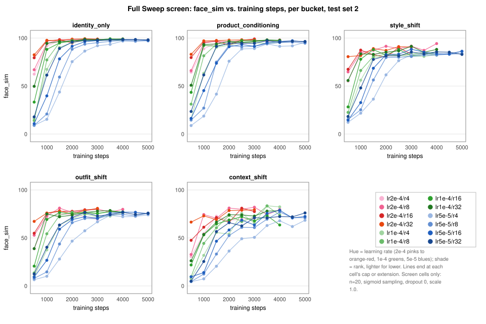
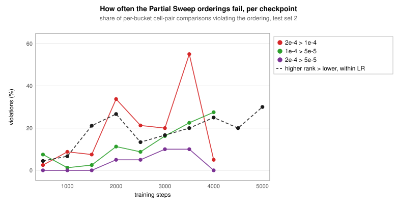
- The Partial Sweep’s learning-rate ordering holds only before convergence: 2e-4 above 1e-4 is violated in 87/520 per-bucket cell-pair comparisons (17%), 6% through step 1500 but 27/80 at step 2000 alone; 1e-4 above 5e-5 in 78/640 (12%), concentrated at 3000-4000; 2e-4 above 5e-5 in 18/520 (3%). At a fixed step count the ordering replicates; trained to convergence it mostly dissolves.
- The rank ordering does not replicate: Within a learning rate a higher rank falls below a lower one in 12-24% of comparisons (2e-4 44/180, 1e-4 41/240, 5e-5 37/300), with reversals up to 18.8 points (r4 above r16, context_shift at step 4000). r32 sits below r8 in 12/30 comparisons at 2e-4; only at 5e-5, the regime still short of convergence, is the ordering nearly clean (3/50).
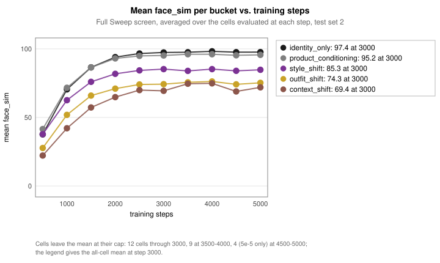
- The bucket order repeats at Full Sweep scale: identity_only and product_conditioning are highest (97.4 and 95.2 all-cell means at step 3000), style_shift and outfit_shift follow (85.3, 74.3), and context_shift is lowest at every checkpoint (69.4 at 3000). The difficulty ranking carries over unchanged, identity_only easiest and context_shift hardest, which strengthens the Partial Sweep observation with twelve converged cells.
6.5.2 face_sim per config vs. training steps
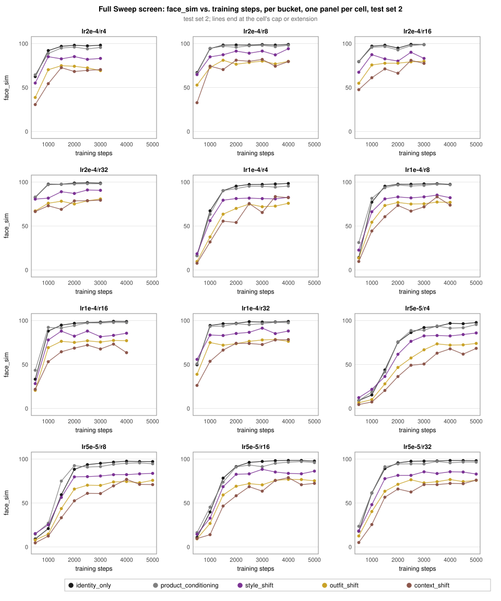
- The cells largely agree on the order: identity_only and product_conditioning are on top from step 1000 on, and the full Partial Sweep order holds in 67 of 86 cell-checkpoints; the exceptions are 17 outfit_shift/context_shift swaps and 2 checkpoints where the top pair is undercut. identity_only stays the easiest bucket and context_shift the hardest on balance, strengthening the Partial Sweep observation.
6.5.3 cosine_sim per bucket vs. training steps
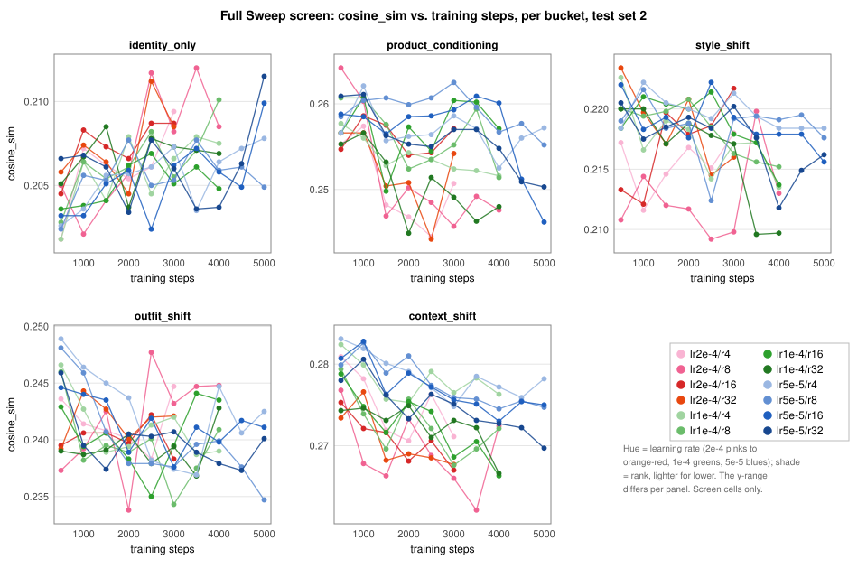
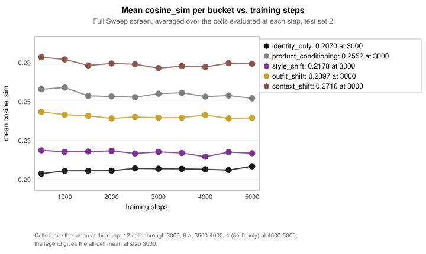
- Still no learning-rate or rank ordering: Across the screen the higher learning rate sits above the lower on cosine_sim in 37% of per-bucket cell-pair comparisons (15-68% by bucket) and the higher rank above the lower in 42%, both near the 50% of no ordering. The bucket extremes are the trade-off showing through, not an ordering: the higher learning rate tends lower on context_shift and product_conditioning (15%, 19%) and higher on identity_only (68%). Otherwise the Partial Sweep observation holds with twelve cells.
- The inverted bucket order carries over: Collapsed to the mean cosine_sim per bucket (Figure 20), the Full Sweep reproduces the Partial Sweep’s inversion at every checkpoint: identity_only lowest (0.2070 at 3000), then style_shift, outfit_shift, product_conditioning, and context_shift highest (0.2716). Further confirmation of the face_sim-cosine_sim trade-off (Reading the two grids together).
6.6 Analysis
6.6.1 Reading the two grids together — Prompt adherence moves inversely to identity
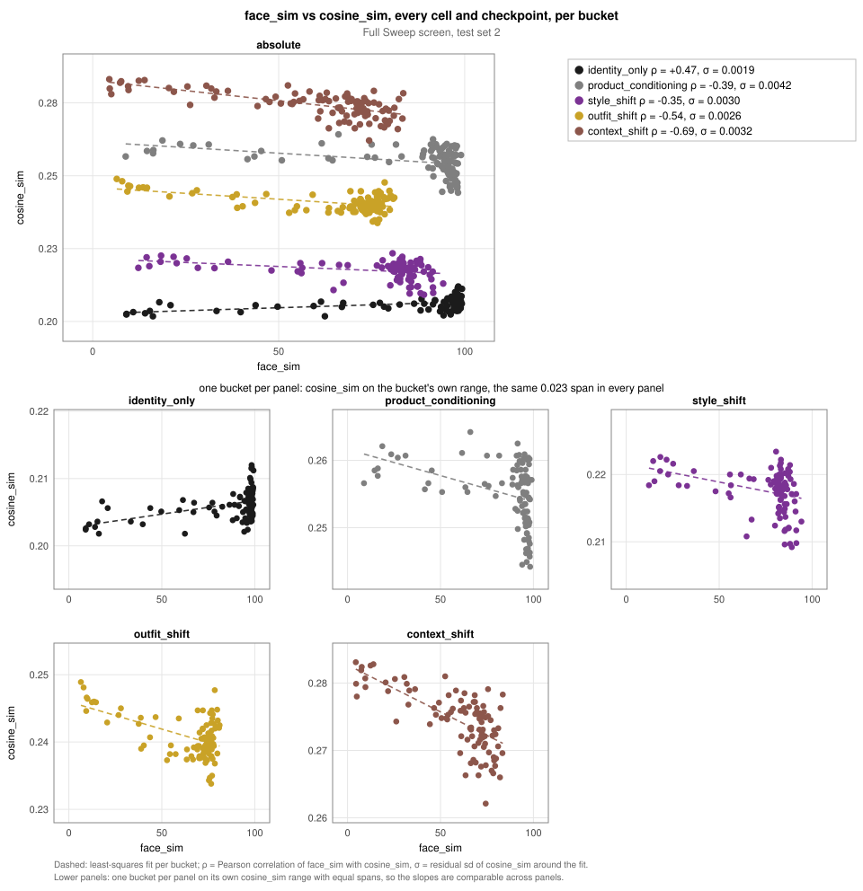
- The inverse coupling repeats: Over every cell and checkpoint, ρ per bucket is identity_only +0.47, product_conditioning -0.39, style_shift -0.35, outfit_shift -0.54, context_shift -0.69 (Partial Sweep: +0.48, −0.60, −0.41, −0.85, −0.77). Every transfer bucket is negative and identity_only is again the positive exception. The steepness order reshuffles: context_shift > outfit_shift > product_conditioning > style_shift by |ρ| against the Partial Sweep’s outfit_shift > context_shift > product_conditioning > style_shift.
- Pooled over the climb: These pools include every checkpoint, so the coupling reflects training as much as the converged cells.
6.6.2 identity_only is a baseline, not part of the trade-off
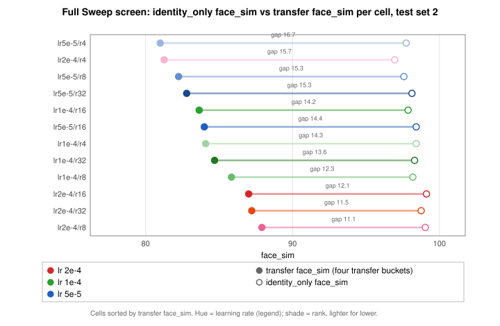
- Saturated at the ceiling: Every cell’s identity_only sits at 97-99, within two points of the ceiling and 11.1 to 16.7 points above the same cell’s transfer face_sim; its cosine_sim sits at 0.206-0.212 regardless of configuration (Partial Sweep — Analysis).
- No prompt structure to adhere to, so excluded from the trade-off: The analysis is about the face_sim-cosine_sim trade-off. identity_only’s prompts ask for the subject and nothing else, so there is no real prompt structure to adhere to and the bucket cannot sit on that trade-off. It is reported as the baseline, what a cell scores when nothing competes with the face, against which the transfer buckets’ real trade-offs are read. From here on the analysis is about transfer.
6.6.3 FS_Finding-1 — Learning rate × rank (Axis1, Axis2): given enough training steps, neither is a differentiator
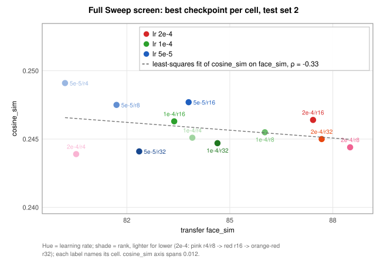
- What is plotted: Best checkpoint per cell (Table 19; selection rule, see Scoring).
- Finding: Trained to convergence, LR × rank stops differentiating. The twelve cells sit within 6.92 face_sim and 0.0052 cosine_sim of each other, and no cell leads by a clear margin.
- Between learning rates the direction holds: 5e-5 has three of the four highest cosine_sim values and two of the three lowest face_sim values. 2e-4 has the highest.
- Within a learning rate it does not order: At 2e-4, r8 pairs the best face_sim with a middling cosine_sim, and r4 is worst on both, off the trade-off rather than on it.
- The winner cell: The screen’s points cluster tightly (Figure 23), and with one seed per cell the differences are not separable from run-to-run variation, so no cell wins by a clear margin under the Performance criterion (The winner cell). The tie-break applies: lr2e-4/r8, the cell with the best face_sim, is the winner cell. The dataset-size, timestep-sampling and dropout blocks ran at it while varying their own axis.
- The trade-off: Across the twelve best checkpoints the trade-off is much weaker (ρ = −0.33 pooled) than along training (−0.35 to −0.69 per bucket, Reading the two grids together): converged cells cluster at one end of the trade-off rather than spreading along it.
6.6.4 FS_Finding-2 — Training steps (Axis3): not learning rate, decides whether a cell converges
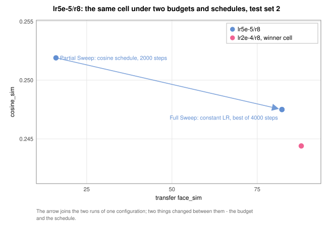
- What is plotted: The same learning rate and rank as the Partial Sweep’s failed cell, retrained to the 5e-5 cap of 4000 steps at a constant learning rate, in place of 2000 steps under cosine decay (Table 20).
- Finding: Trained to its own convergence at constant LR, lr5e-5/r8 goes from face_sim 16 to 82. The Partial Sweep’s “5e-5 does not work” was a budget artefact.
- Two mechanisms compounded in the Partial Sweep: 2000 steps are too few for a slow learning rate. Under cosine decay the cell labelled 5e-5 was already at
2.5e-05by step 999 and still falling, an average rate closer to 3e-5. The label described what was configured, not what the optimizer used. - The failed cell is one end of the trade-off, not off the chart: Its cosine_sim, 0.2519, is the highest in the study. Full Sweep cells top out at 0.2491, and no inference scale exceeds it. An adapter that learned almost no identity barely perturbs the base model, so the prompt is followed nearly as if none were loaded. That is the extreme prompt-adherence corner FS_Finding-1 predicts.
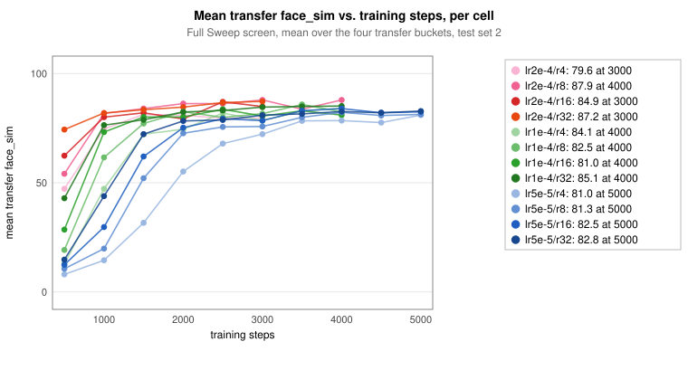
- Learning rate buys convergence speed, not performance: 2e-4 cells plateau at a median of 2750 steps against 4500 at 5e-5. The ranges overlap at 4000, so the saving holds on average only. At 2e-4, r8 takes as long as the fastest 5e-5 cells.
6.6.5 FS_Finding-3 — Dataset size (Axis4): twenty images is the working point; thirty may trade face_sim for cosine_sim
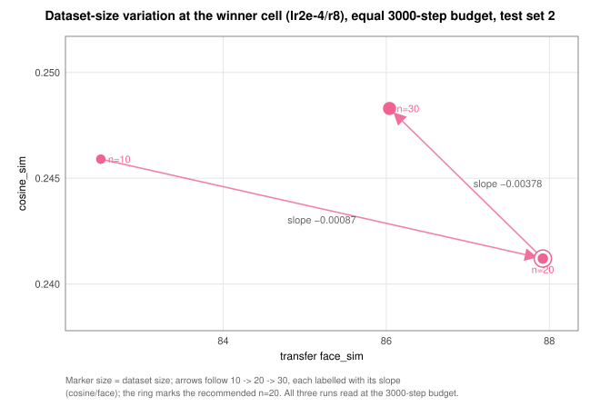
- What is plotted: The winner cell (lr2e-4/r8) at n=10, 20 and 30, all read at the equal 3000-step budget (Axis4; Table 21).
- Finding: At the equal budget n=20 has the best face_sim (87.9), and the step beyond it trades identity fidelity for prompt adherence at 4.4 times the slope at which 10→20 bought it.
- 10 to 20 is a gain in the expected direction: +5.42 face_sim at a slope of −0.00087 cosine/face. 20 therefore reads as better rather than differently positioned, within the single-seed limits Threat 2 sets. Ten images already fit the face. What more images buy is coverage (Axis4).
- 20 to 30 looks like a trade-off, not an improvement: −1.88 face_sim at a slope of −0.00378 cosine/face, 4.4 times the 10→20 slope. The −1.88 is inside the range Threat 2 says a seed can move. n=30 sits further along the trade-off toward prompt adherence. Whether that slope is worth paying, or even perceptible, depends on the application and is not established here. For identity-fidelity-led work, 20 remains the point.
6.6.6 FS_Finding-4 — Timestep sampling (Axis5): shift is the clear loser, and sigmoid vs. linear has no verdict
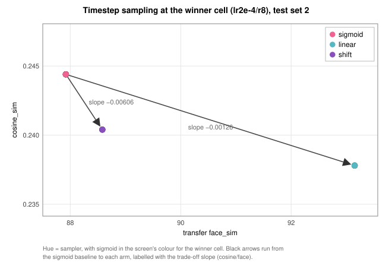
- What is plotted: The timestep-sampling arms at the winner cell (lr2e-4/r8), best checkpoint each (selection rule, see Scoring).
- Finding: shift is the clear loser, trading at −0.00606 cosine/face, the worst slope of any arm here. Between sigmoid and linear no winner can be declared: linear’s 5.2 face_sim at −0.00126 cosine/face is a position along the trade-off, not an improvement, and both arms were still climbing at the 5000-step ceiling (Extensions, above; marked *, Table 22).
6.6.6.1 The falsification check: linear at r32
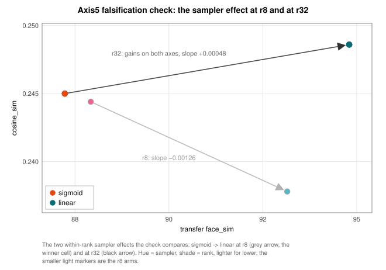
- What was run: linear re-run at r32, the one extra cell of the single-axis blocks (Axis5, Separability). The check asks whether linear’s movement against sigmoid reproduces at a second rank; if it reverses or vanishes, heredity is falsified.
- Finding: The check could not deliver a verdict, because the winner cell gave it no definite effect to test: linear against sigmoid at r8 is a trade-off on an arm still climbing at the ceiling, not an improvement that could reverse or vanish. What the extra cell shows instead is rank-dependence: at r32 the same switch leads on both axes (+7.6 face_sim, +0.0036 cosine_sim, slope +0.00048) where at r8 it traded (slope −0.00126). The assumption that the sampler’s effect is the same at every (LR, rank) cell is unsupported and remains untested.
6.6.7 FS_Finding-5 — LoRA dropout (Axis6): moves the winner cell along the trade-off, not to a better one
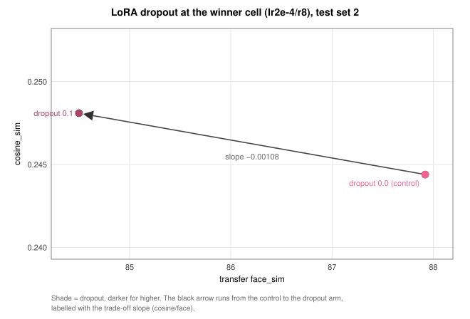
- What is plotted: The dropout arm (Axis6): the winner cell (lr2e-4/r8) re-run with adapter dropout 0.1, against the winner cell as its control at the same budget (Table 23).
- The test: Dropout tests the overfitting account at the winner cell. If the identity-versus-transfer gap were over-commitment to the training set, a regularizer should relieve it: a move to a better point, not along the trade-off.
- Finding: Dropout 0.1 trades face_sim for cosine_sim at a slope of −0.00108 cosine/face (−3.42 face_sim). That is a move along the trade-off, not to a better one: the overfitting account is not supported.
- Not inert, a trade-off in the direction regularization should produce: The 3.42 face_sim is inside the range Threat 2 says a seed can move. The cosine_sim gain is over two thirds of the screen’s 0.0052 range, with identity_only unchanged at 98-99.
- What that changes: For identity-fidelity-led work dropout is a loss. For prompt-adherence-led work it is a valid lever, and its best checkpoint arrived at step 2500 against the control’s 4000.
6.6.8 FS_Finding-6 — Inference scale (Axis7): a generation-time lever on the trade-off, with no case to move off scale 1.0
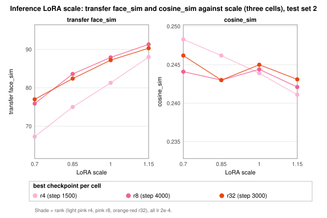
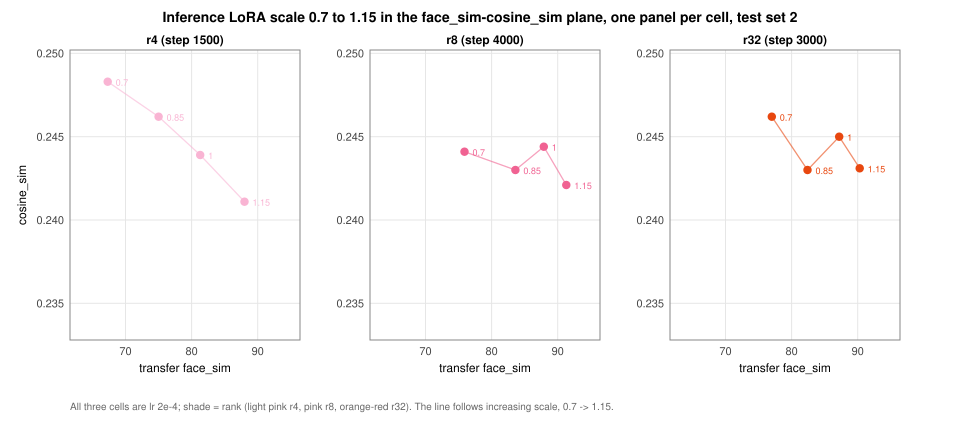
- What is plotted: Three checkpoints spanning capacity, lr2e-4 at ranks 4, 8 (the winner cell) and 32, each at its best checkpoint, run at four scales (Execution, Table 24).
- The test: Whether a generation-time parameter substitutes for retraining choices (Axis7): scaling down as free regularization, scaling up as recovery of under-asserted identity.
- Finding: Scaling down to 0.7 gives up 10-14 face_sim at −0.00031 cosine/face at best, and at r8 it loses on both axes. Scale 1.15 gains +3.1 to +6.7 face_sim over 1.0 at a slope of −0.00042 to −0.00068 cosine/face. Both directions are positions along the trade-off, not improvements, and scale 1.0 is the near-universal default: single-seed evidence does not support moving off it.
6.6.8.1 Scale < 1: scaling down buys almost nothing
- The premise: Under the Tikhonov reading (Axis7), the identity signal, the face direction itself, should survive scaling down, while the overfit component, what the adapter memorized beyond the face, should not: prompt adherence recovered at little face_sim cost.
- The slope undercuts it: The 1.0→0.7 trade-off runs at −0.00031 cosine/face at best (r4; r32 −0.00012, r8 loses on both axes), a far worse slope than any other lever here. [39] itself found LoRA scaling recovers less of the base model’s diversity than the regularization reading suggests.
- Substitution verdict: As a stand-in for choosing an earlier checkpoint, the question this axis was run to answer (Axis7), scaling down fails: the prompt adherence it recovers is marginal at best and negative at r8.
6.6.8.2 Scale > 1: scaling up buys face_sim at the cheapest slope measured here
- The premise half-holds: Amplifying past trained strength does recover face_sim from the same checkpoint without retraining (Axis7), but at a real cosine_sim cost: a move along the trade-off, not a free recovery.
- The 1.0→1.15 step is a trade-off: r8 gains +3.4 face_sim, r32 +3.1 and r4 +6.7, concentrated on context_shift prompts (+8 to +14), and every cell pays cosine_sim for it: the step trades at −0.00061 to −0.00068 cosine/face (r4 −0.00042), 1.8 to 3.0 times the screen’s between-cell slope of −0.00023, on the same cosine_sim basis.
Practical form: Scale is a generation-time position on the trade-off. The 1.0→1.15 step buys face_sim at the cheapest slope measured here, on one seed; whether to take it is an application call, not a recommendation this study can make.
6.6.9 FS_Finding-7 — No-adapter control (no axis): the base model carries no usable prior, so the adapter taught an identity
- What is plotted: The 25 eval prompts were generated once with no adapter loaded, substituting the subject’s real name for the trigger token, and scored through the same pipeline (test set 2, Table 25).
- Finding: With no adapter the base model scores identity_only 26.13 and the transfer buckets 8-15. It carries no usable prior on this subject, and the Partial Sweep’s worst cell (15.9) sat below even that.
6.6.9.1 face_sim: the base model does not reproduce this subject
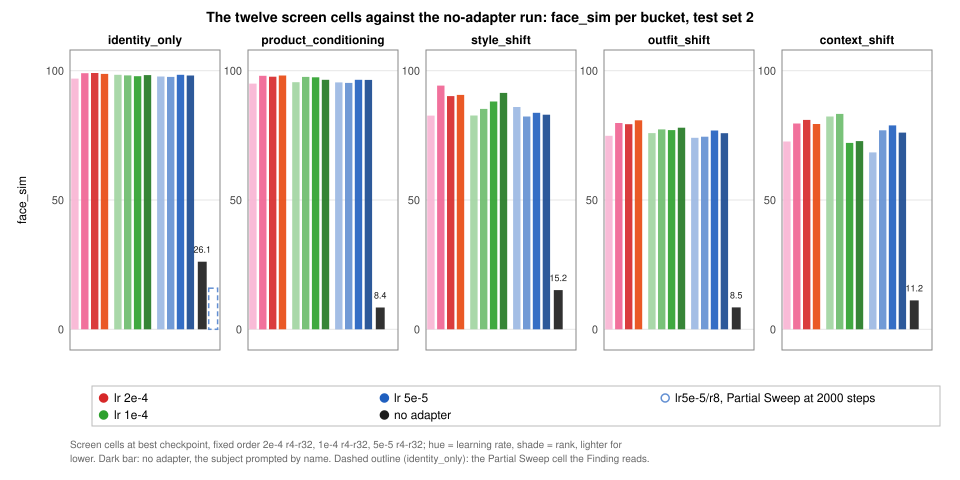
- Against the trained cells: The trained cells score 97-99 identity_only and 81-88 transfer (FS_Finding-1). FLUX carries little or no usable prior on this face, the weak prior Threat 1 expects, now shown by the data. The adapter was teaching an identity, not sharpening one: the base model already draws faces, it does not put this subject on them.
- Why identity_only scores above the transfer buckets is not separable: It may be a weak prior surfacing when nothing competes, frontal studio portraits of similar-looking women simply resembling each other, or the scene prompts compromising the rendered face itself: smaller and angled against frontal reference photographs, any face scores lower.
6.6.9.2 Prompt adherence: no verdict on an adapter-imposed cost
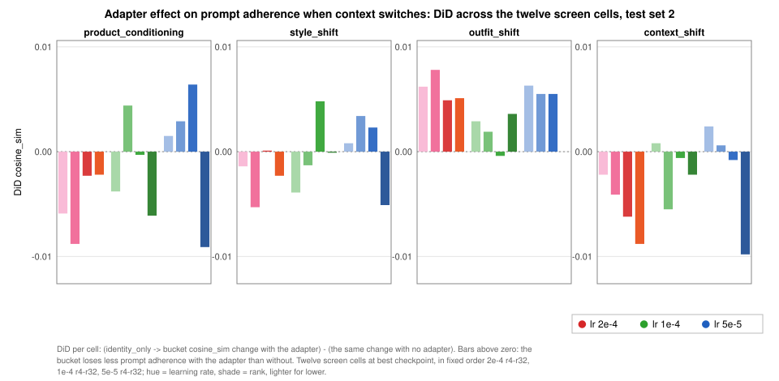
- The read: cosine_sim ignores whose face appears, so a difference-in-differences read is available: per bucket, the identity_only→bucket cosine_sim change with the adapter minus the same change without it, netting out per-bucket prompt difficulty and any global adapter offset. The same read is not available on face_sim: with no adapter every prompt generates an arbitrary person, so the control’s face_sim carries no identity to erode. Read at the twelve screen cells’ best checkpoints.
- Two tendencies are stable across cells: outfit_shift loses less prompt adherence with an adapter than without (mean +0.0041, 11 of 12 cells non-negative); context_shift leans the other way (mean −0.0030, 9 of 12 negative, all four 2e-4 cells among them, the direction FS_Finding-1’s trade-off predicts). product_conditioning and style_shift are noise.
- The control is the bottleneck: averaging across cells de-noises only the adapter side. The no-adapter control is one run of five prompts per bucket, subtracted from every cell alike, so one noisy control value can set a whole column’s sign, and the twelve cells share a seed and eval prompt set, so they are not independent replicates. No statement about an adapter-imposed prompt-adherence cost is supported; a calibrated version needs the control re-run over seeds.
6.7 What none of this establishes
- Any fine ranking within the screen, or between a single-axis arm and its control (Threat 2): The screen supports the direction and ratio of the trade-off, not an ordering.
- That these numbers transfer to another subject (Threat 1).
- A mechanism for the identity-versus-transfer gap: Two regularization tests, scaling the adapter down (FS_Finding-6) and LoRA dropout (FS_Finding-5), did not relieve it at a better slope. The no-adapter run cannot supply one (FS_Finding-7).
7 What the two test sets measure
The gap between the sets isolates the event-similarity component of a face_sim score (Methodology — The two test sets). It is not a constant offset.
Test set 1 minus test set 2 on identity_only, across the 171 checkpoints of the pilot and both sweeps that carry test-set-1 scores (all learning-rate schedules, ranks 4 to 64; the Pilot and Partial Sweep results tables show a subset of them):
| Checkpoint state | test set 1 - test set 2 (identity_only) |
|---|---|
| Under-converged (identity_only < 70 on test set 2) | +8 to +26 |
| Mid-climb (70-95) | +2 to +20, shrinking as identity_only rises |
| Near-saturated (95-98) | +1.3 to +4.2, mostly under +3 |
| Saturated (>= 98) | +0.4 to +1.7, mostly under +1.5 |
7.1 Test set 1 is an easier test, not a memorization trap
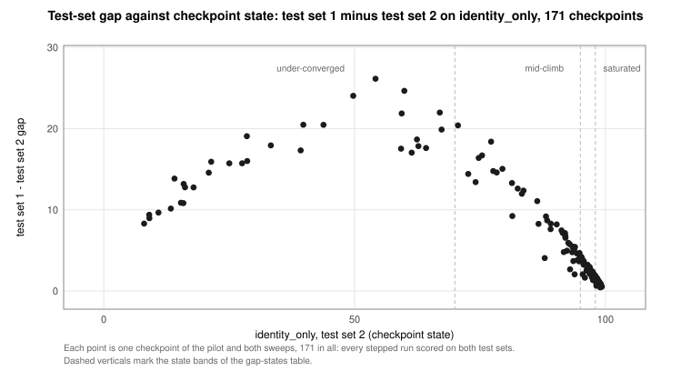
- The gap peaks mid-learning and collapses with convergence: If a strong adapter memorized event-specific detail, the gap would persist or grow with training. Instead it is small where little is learned (+8 to +14 below identity_only 20), peaks near +26 in the half-learned middle, and falls to under +2 at saturation.
- Same-event references credit a half-learned face: That is the peak’s mechanism: a converged adapter clears both bars, a barely-started one clears neither, and a half-learned face clears only the easy, same-event bar.
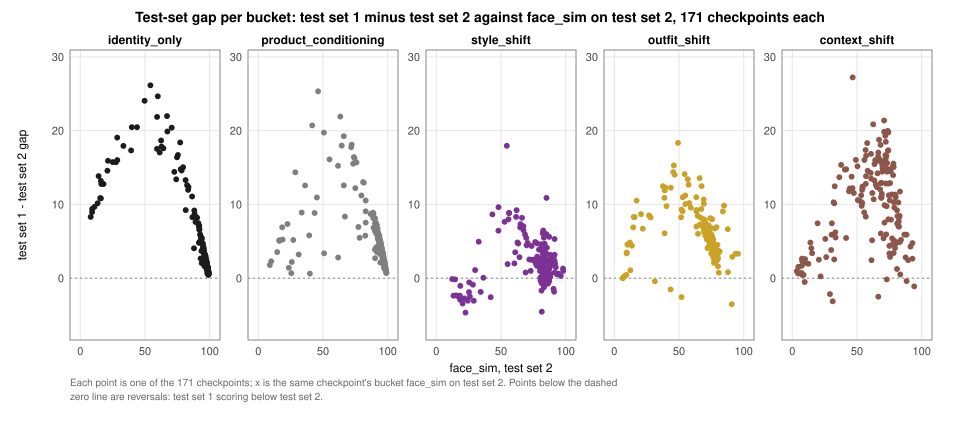
- The exception is
style_shift: The prompt supplies the lighting and styling, so the shared-event advantage has little to work with. The gap is smallest there and occasionally reverses: test set 1 falls more than half a point below test set 2 in 38 of 855 comparisons, four fifths of them on style_shift, over half below face_sim 50, where a 5-prompt mean is unstable anyway.
7.2 Consequence: test set 1 flatters every cell and narrows differences
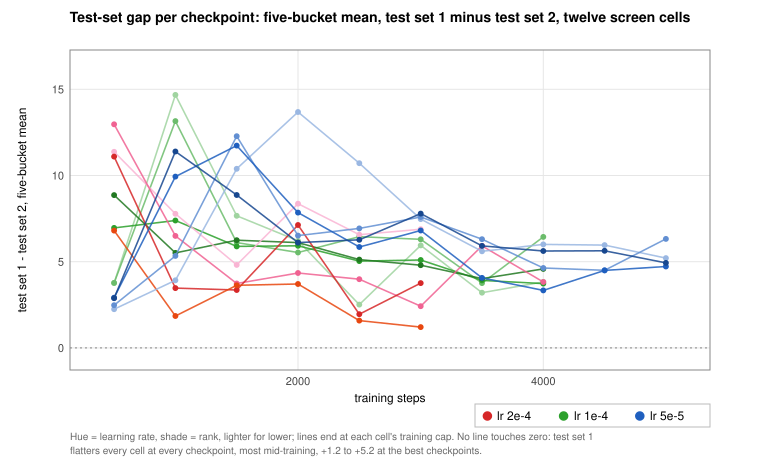
- What is plotted: Each screen cell’s per-checkpoint gap, test set 1 minus test set 2, on the five-bucket mean face_sim (Figure 36).
- Every cell scores higher on test set 1 at every checkpoint: Never by less than +1.2 five-bucket points; +1.2 to +5.2 at the test-set-2 best checkpoints, the largest gaps on the weaker half of the screen.
- Compression at convergence is mild: Test set 2 spreads the twelve cells over 5.8 points against test set 1’s 4.7. Large spreads and gaps belong to checkpoint state, the mid-learning peak above, not to screen-cell choice.
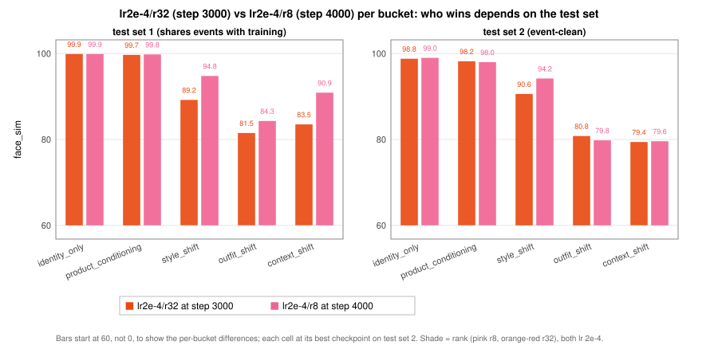
- Who wins depends on the set: On test set 1 r8 leads every bucket, context_shift by 7.4. On test set 2 that lead collapses to 0.2, and r32 takes product_conditioning and outfit_shift (Figure 37).
- cosine_sim plays no part here: It never touches the reference set, so it is identical under both.
7.3 Best-checkpoint selection depends on which set you pick
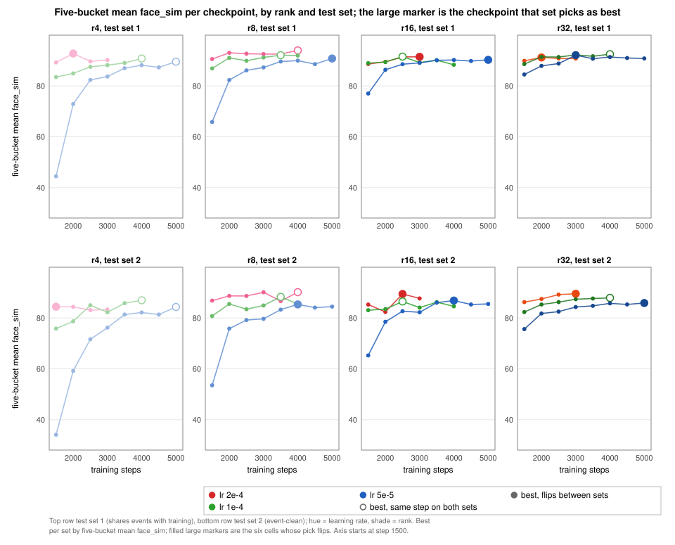
- Six of the twelve screen cells flip: Picking by five-bucket mean face_sim, lr2e-4 r4, r16 and r32 and lr5e-5 r8, r16 and r32 choose a different best checkpoint on test set 1 than on test set 2. The four lr1e-4 cells and the winner cell hold.
- What that means: Retrospective selection inherits the test set’s bias (Threat 6), and the flips are the fragility Threat 3 predicts: with best-to-second-best gaps averaging about a point, the argmax rides on which set scored it. “The best checkpoint” is only as trustworthy as the set it is picked on.
8 Conclusion
- The settings that survive this study are modest: Twenty images, rank 8, a viable learning rate trained to its own convergence, the default sigmoid sampling, no dropout, scale 1.0 at generation, and the checkpoint picked retrospectively on held-out references. Every lever tried beyond it moved along the identity/prompt-adherence trade-off rather than to a better point.
- Checkpoint state, not configuration, is the load-bearing variable: Given enough steps, learning rate and rank stop separating configurations (FS_Finding-1); a configuration written off at a fixed budget converged to 82 face_sim at its own pace (FS_Finding-2); and the test-set gap, the bucket orderings and the between-set compression all track how far training has progressed, not which cell was chosen.
- The trade-off is the finding: Identity and prompt adherence trade against each other, weakly across converged cells and in every lever priced here; the currency that makes levers comparable is the slope, cosine per face_sim point.
- Score against references training has never seen: Same-event references flatter half-learned checkpoints by up to 26 face_sim points and pick a different “best” checkpoint in half the cells.
- What transfers is the procedure, not the values: Held-out multi-reference scoring on two test sets, per-LR training caps with retrospective checkpoint selection, and convergence-aware comparison. The numbers come from one subject, one dataset, one seed and one face model, and stay there.
How to cite
If you found this useful, please cite as:
@misc{aja2026lora,
title = {FLUX LoRA influencer-likeness research},
author = {Aja S.},
year = {2026},
url = {https://aja-ekapada.github.io/flux-lora-likeness/}
}